14 · Gram-Negative Bacilli of Medical Importance
Dr. Webster · Lecture 14 · 23 October 2026
Instructional Objectives
- Compare and contrast the morphology, medium, laboratory tests, biochemical reactions, diseases, clinical manifestations, methods of treatment, and prevention of Gram-negative bacilli of medical importance.
- Describe the modes of transmission by which humans acquire Gram-negative bacilli of medical importance.
About 2 hours 4 minutes with Dr. Webster, in three parts (a classmate’s recording; parts start at 0:00, 46:13 and 1:31:32, and the times below run from the start). One transcript only: the recording came without Notability’s own transcript, so there is no second opinion to compare against, and quotes below are from a single machine transcription (organism names it misheard are written correctly here). Every factual claim was checked against the deck; where the two differ, the slide is what this guide teaches. She read the slides closely and corrected none of them.
She signposts little, so the quizzes are weighted by time spent on each organism group, stories and outbreak tallies taken out: Escherichia coli and its four pathotypes about 17 minutes, Pseudomonas aeruginosa 14, Yersinia pestis 12 (5 of them outbreaks and history), endotoxin 10, the enteric family, media and antigens 9, Salmonella 9, Bordetella pertussis 8, Legionella 8 (mostly outbreaks), the other coliforms 7 (mostly Serratia stories), Shigella 5, the Pseudomonas relatives and Haemophilus 4 each, Brucella and Proteus with its relatives 3½ each, the sorting scheme 3, Francisella 2, and the enteric yersinias, Pasteurella and Alcaligenes about a minute each.
| What was said | What it means for you |
|---|---|
| “There are four different strains of E. coli that you need to know. Hint, hint, hint, hint.” [1:04:18] | The one plain signpost of the lecture. 14.11: enterotoxigenic, enteroinvasive, enteropathogenic and enterohemorrhagic O157:H7, each with its mechanism, disease, source, test and prevention. Every quiz set carries all four. |
| “I’m not going to be testing on which antibiotics, because that’s where we have our PDRs [Physicians’ Desk Reference].” [26:25] | Drug lists stay in the guide for completeness; no question asks which antibiotic treats what. Non-drug management (fluids and electrolytes, dialysis, plasmapheresis, combination therapy for multidrug resistance, vaccines, breast feeding, quarantine) is fair game. |
| “Very, very, very common with cystic fibrosis patients.” [23:53] | The slide’s own starred fact (14.3): Pseudomonas aeruginosa in burns, neoplastic disease and cystic fibrosis; and Burkholderia cepacia with it in cystic fibrosis (14.4). |
| “Endotoxin isn’t something to be ignored. And you have to remember that any gram-negative organism will have that weapon at its disposal.” [9:37] | 14.1: lipid A, release on lysis, the protective low-level response and the septic-shock flood. |
| “You do not have to memorize this diagram again.” [5:20] | Slide 8’s diagram of endotoxin’s targets (not reproduced here). The text she walked through (complement, coagulation, platelets, neutrophils, macrophages; slides 9–10) is in 14.1. |
| “You do not need to memorize all of this. But just know that it can basically hit you pretty much anywhere.” [25:02] | Slide 19’s body map of Pseudomonas infections (14.3): not asked site by site. The infections of healthy people (rashes, urinary tract infection, swimmer’s ear, corneal ulcers in contact lens wearers) are on the slide’s text and are asked. |
| “You don’t need to worry about the percentages or anything like that.” [56:17] | Slide 45’s share of nosocomial infections, and percentages generally: none is asked. |
| “I’m not asking you to memorize this chart.” [57:12] | Slide 47’s biochemical tree (14.10). Know what it starts from (lactose fermentation on triple sugar iron); the branches are not asked. |
| “There seems to be a relationship, association, not causation” [1:29:03] | Proteus and bladder and kidney stones (14.13): an association, not a proven cause. |
| “You have to diagnose it quickly in order to be able to control it because you can have death occurring within about two days of your first symptoms.” [1:53:30] | Plague diagnosis (14.17): history (“where have you been? Have you been around little critters lately?”), symptoms and aspiration of the bubo. |
Things said that are not on a slide — consistent with the deck, useful as hooks, not asked:
- Killing Gram-negatives with an antibiotic releases a surge of endotoxin, “why a lot of times when you’re treating for a gram-negative, you feel a whole lot worse before you start feeling better” [1:11].
- Pseudomonas aeruginosa smells like rotten grapes [23:27]; contact lens wearers should take the lenses out, clean them and store them in solution every day [25:27], which also guards against Stenotrophomonas [31:52].
- Raw milk: “pasteurization is a good thing” [33:34] (Brucella, and again for enterohemorrhagic Escherichia coli from raw milk and cheese [1:16:58]). Hunters of wild rabbits catch tularemia [36:13].
- Pertussis boosters are now recommended for older adults as well [41:52].
- Legionella: “Pontiac fever” was the name of the illness before the 1976 outbreak, and saved tissue later showed the same organism [49:24].
- Breast feeding protects against enteropathogenic Escherichia coli because the immunoglobulin A in colostrum and breast milk coats the intestinal lining and keeps the organism from adhering [1:10:16].
- The Klebsiella capsule stain is done in India ink: the capsule does not take up the ink and shows as a clear halo [1:21:43]. Serratia grows in bathroom grout lines (the tile photograph on slide 68) [1:24:12].
- Typhoid Mary (Mary Mallon), a cook in New York City, was an asymptomatic carrier [1:33:52].
- Plague in the United States reaches campers in rodent country, by fleas that get into the tent; there has been no human-to-human transmission in the United States since 1924 [1:47:58].
- The dental-procedure endocarditis of H. parainfluenzae and H. aphrophilus is why people with cardiac conditions take antibiotics before a dental cleaning [2:03:13].
14.1 · Objective 1 — Endotoxin, the shared weapon
Endotoxin is a structural component of the Gram-negative outer membrane. Chemically it is lipopolysaccharide; lipid A is the biologically active component of the complex, the part most responsible for pathogenesis. It is released on the lysis of Gram-negative cells, including through antibiotic therapy, and as bacterial cells grow and divide, particularly when they are rapidly proliferating.
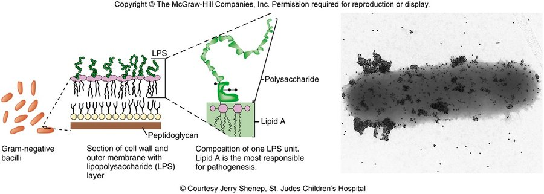
| Part of the lipopolysaccharide | What it is |
|---|---|
| Lipid A | The lipid region to which the polysaccharide is bound; the biologically active component |
| Core polysaccharide | Identical for large groups of bacteria, with some unique sugars |
| O antigen polysaccharide | Unique for each organism; repeating units of 3–4 different hexoses. The number of repeating units designates the antigen as rough, semi-rough or smooth |
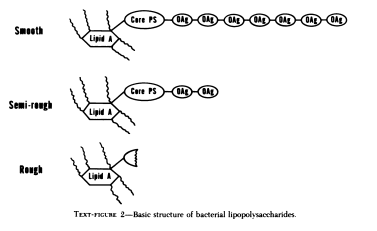
What endotoxin does
- Usually protective. In the gut and airways the first contact between epithelium and Gram-negative bacteria is the outer membrane and its lipopolysaccharide. These are antigens of the innate (nonspecific) immune system, signaling through a lipopolysaccharide binding complex and a Toll-like receptor. Under most circumstances this gives a moderated, protective inflammatory response, which keeps most mucosal infections mucosal and helps maintain our symbiosis with some Gram-negative bacilli.
- Chronic infection. Some bacteria have adapted by modifying their lipopolysaccharide to evade the immune system.
- Potentially damaging, through complement, coagulation and a variety of cells:
- Complement turns on by the classical pathway (antigen-antibody reaction) or the alternative pathway, and can result in hemorrhagic necrosis.
- Coagulation: tissue injury through coagulation changes, disseminated intravascular coagulation; fibrin deposited in the lungs, liver and spleen; it may trigger bradykinin, a vasodilator in shock.
- Platelets: altered activity causing aggregation (differs among species). Neutrophils: low levels may enhance phagocytosis, but higher levels may interfere with chemotaxis to the site of infection. Macrophages release pro-coagulants, collagenase, pyrogens, prostaglandins, colony stimulating factor, tumor necrosis factor, interleukin 1 and interleukin 6, nitric oxide and reactive oxygen species.
14.2 · Objective 1 — Sorting the Gram-negative bacilli
The Gram-negative bacilli are differentiated by three properties: oxygen requirement (aerobic, facultatively anaerobic, obligate anaerobic), the ability to ferment lactose, and the oxidase enzyme.
![Table 20.1, Gram-negative pathogens: Gram-negative rods branch into aerobes that do not ferment carbohydrates (Pseudomonas, Burkholderia, Bordetella, Francisella, Brucella, Alcaligenes), facultative anaerobes that ferment carbohydrates, and obligate anaerobes (Bacteroides). The facultative anaerobes split into lactose-fermenting (Escherichia, Klebsiella, Citrobacter, Enterobacter) and non-lactose-fermenting; the non-lactose fermenters split into oxidase-negative (Salmonella, Shigella, Proteus, Providencia, Morganella, Hafnia, Edwardsiella, Serratia, Yersinia) and oxidase-positive (Haemophilus, Pasteurella).](micro-exam-3-study-guide-images/l14-s012-gram-negative-scheme.png)
Aerobic Gram-negative nonenteric bacilli are a large, diverse group of non-spore-forming bacteria, from habitats as varied as the large intestine, animals, the respiratory tract, soil and water. Most are not medically important; some are true pathogens and some opportunists. All use endotoxin as one of their offensive weapons. (The third branch of the scheme, the obligate anaerobes, is Bacteroides.) The medically important aerobic genera fall in three pairs:
| Pair | Kind of pathogen |
|---|---|
| Pseudomonas and Burkholderia | Opportunistic pathogens |
| Brucella and Francisella | Zoonotic pathogens |
| Bordetella and Legionella | Mainly human pathogens |
14.3 · Objective 1 — Pseudomonas aeruginosa
| Heading | The pseudomonads, and Pseudomonas aeruginosa |
|---|---|
| Morphology | Small Gram-negative rods with a single polar flagellum |
| Habitat | Free living, primarily in soil, sea water and fresh water; also colonize plants and animals. Important decomposers and bioremediators (exoenzymes such as protease, amylase, pectinase and cellulase; oil-eating and pesticide-clearing strains); frequent contaminants in homes and clinical settings; food spoilage (dairy, meat, eggs). P. aeruginosa: soil and water, an intestinal resident in 10% of normal people, also on skin and in saliva |
| Biochemistry | Aerobic respiration; do not ferment carbohydrates (aerobic respiration, no fermentation). Produce oxidase and catalase. Produce pseudomycins (antifungal agents). Many make water-soluble pigments (blue-green, yellow-green, brown, red) |
| Identifying signs | Grapelike odor; greenish-blue pigment, pyocyanin |
| Hardiness | Resistant to soaps, dyes, quaternary ammonium disinfectants, drugs and drying; survives in nutrient-poor environments; a major agent of nosocomial infections |
| Why it contaminates equipment | Frequent contaminant of ventilators, intravenous solutions and anesthesia equipment because it produces biofilms |
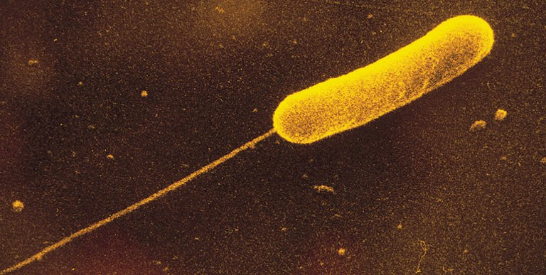
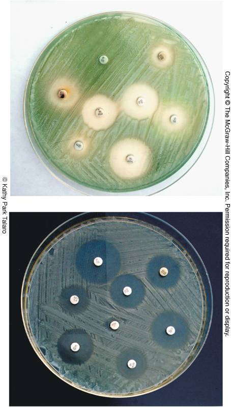
Virulence and resistance
- Exotoxin A inhibits protein synthesis.
- Slime layer: resistance to phagocytosis and biofilm formation. Cells in biofilms adhere by flagella and pili and form microcolonies; three polysaccharides stabilize the biofilm and impair bacterial clearance.
- Exoenzymes: exoenzyme S induces apoptosis of T cells; others degrade phospholipid.
- Multidrug resistant, through restricted outer membrane permeability, which limits drug entry, antibiotic-inactivating enzymes, efflux pumps, horizontal transfer of resistance genes and biofilm formation. The slide notes it is one of the top three critical pathogens the World Health Organization prioritized for research into new treatments (with Acinetobacter baumannii and Escherichia coli; see 14.21).
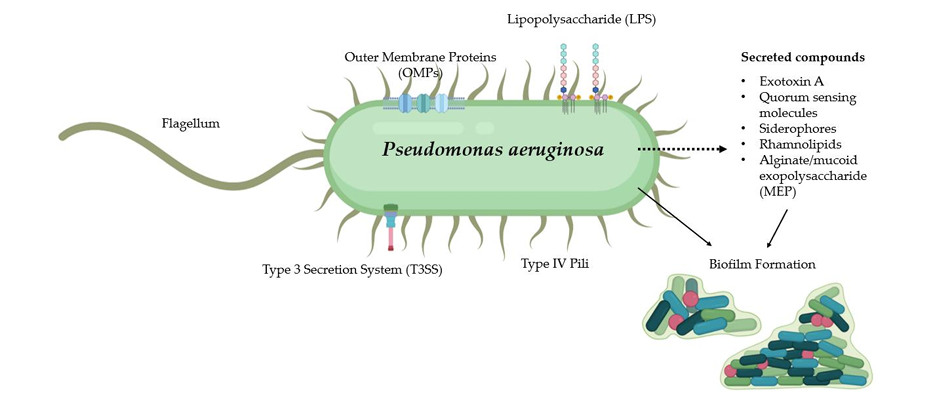
Disease
- A common cause of nosocomial infection in hosts with burns, neoplastic disease and cystic fibrosis (the slide stars cystic fibrosis with three asterisks). Complications include pneumonia, urinary tract infection, abscesses, otitis and corneal disease; septicemia leads to endocarditis, meningitis and bronchopneumonia.
- Typical infections in healthy people: skin rashes, urinary tract infection, otitis externa (swimmer’s ear), and corneal ulcers in contact lens wearers.
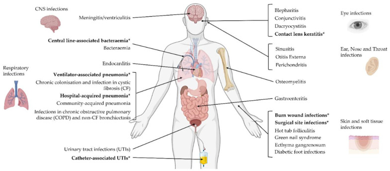
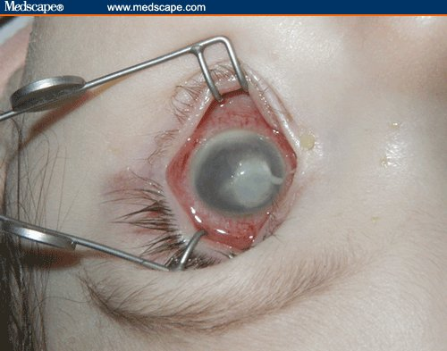
Treatment and prevention. The antibiotics listed are cephalosporins, aminoglycosides, carbenicillin, polymyxin, quinolones and monobactams. A vaccine is in development, particularly for cystic fibrosis patients: most candidates rely on antibodies against bacterial protein; one uses the PopB protein to stimulate T helper 17 cells, which release interleukin 17 and enhance antibacterial mucosal defenses; one in current testing uses the porin membrane protein OprH and has worked against at least two strains. But in cystic fibrosis, where the infection is often chronic, vaccination may induce increased pulmonary inflammation and tissue damage: it may worsen lung inflammation. Mucosal delivery by liposomes and nanoparticles is being investigated.
14.4 · Objective 1 — Burkholderia, Acinetobacter, Stenotrophomonas
The related Gram-negative aerobic rods are similar to the pseudomonads: wide habitats in soil, water and related environments; obligate aerobes that do not ferment sugars; opportunistic pathogens. (The slide also calls them motile and oxidase positive; see 14.21.)
| Organism | Where it lives and how it gets in | Disease | Notes |
|---|---|---|---|
| Burkholderia cepacia | Biodegrades many substances; a plant pathogen | Opportunist of the respiratory tract, urinary tract and skin | Rapidly mutates; multidrug resistant; a particular problem in cystic fibrosis, as a copathogen with Pseudomonas (an 80% fatality) |
| Burkholderia pseudomallei | Soil and water of tropical climates; acquired through a penetrating injury or inhalation | Melioidosis: wound infection with localized nodules, fever and muscle aches; bronchitis and pneumonia; septicemia; endotoxic shock; liver and brain abscesses | The body map adds parotitis, bone, joint, genitourinary and skeletal-muscle infection |
| Acinetobacter baumannii | Nosocomial and community acquired; survives months on fomites | Wounds, lungs, urinary tract, burns, blood; infections after traumatic (combat) wounds; the immunocompromised | Also listed as needing urgent research; multidrug resistant, so combination treatment (carbapenems, polymyxin B, ampicillin) |
| Stenotrophomonas maltophilia | Fresh water, soil, fecal flora of humans and domestic animals; forms biofilms; contaminates disinfectants, dialysis and respiratory equipment, water dispensers and catheters | Isolated from respiratory, soft tissue, blood, cerebrospinal fluid and eye specimens | Multiple drug resistance; combination therapy (cephalosporins, tetracyclines, fluoroquinolones, penicillins) |
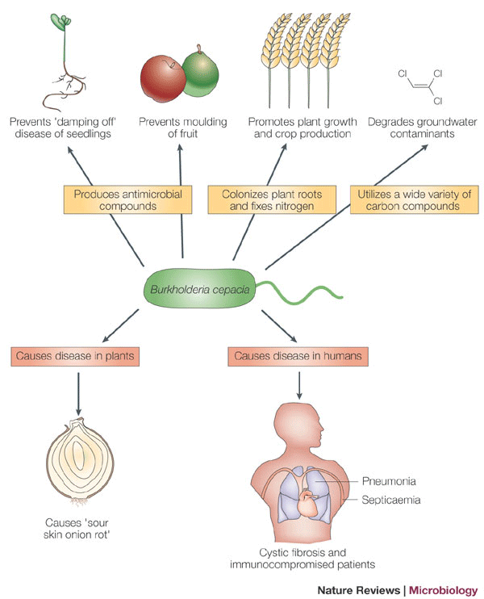
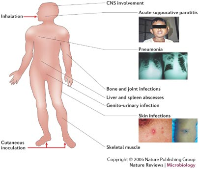
14.5 · Objective 1 — Brucella and brucellosis
| Heading | Brucella |
|---|---|
| Morphology | Tiny Gram-negative coccobacilli |
| Species | Brucella abortus (cattle) and Brucella suis (pigs) |
| Disease names | Brucellosis: Malta fever, undulant fever, Bang disease |
| Transmission | A zoonosis of animal handling and slaughtering: contact with the blood, urine or placentas of infected animals, or unpasteurized dairy products (raw dairy). Human-to-human transmission is rare |
| Pathogenesis | Enters through damaged skin or mucous membranes; phagocytes carry it to the blood, with lesions in the liver, spleen, bone marrow and kidneys |
| Manifestations | A severe febrile illness with a fluctuating fever over weeks to a year (undulant fever); chills, sweating, headache, muscle pain, weight loss |
| Laboratory test | Serological: an agglutination titer test |
| Treatment | A combination of tetracycline and rifampin or streptomycin |
| Prevention | An animal vaccine is available. A potential bioweapon |
14.6 · Objective 1 — Francisella tularensis and tularemia
| Heading | Francisella tularensis |
|---|---|
| Disease | Tularemia, rabbit fever: a zoonosis of mammals endemic to the northern hemisphere, particularly rabbits |
| Transmission | Contact with infected animals, water and dust, or bites by vectors. The infective dose is very small (10–50 organisms) |
| Course | Incubation of days to 3 weeks; headache, backache, fever, chills, malaise and weakness; ulcerative skin lesions and swollen lymph nodes; sore throat, intestinal involvement and respiratory infection. A 10% death rate in the systemic and pulmonic forms |
| Relapse | Intracellular persistence can lead to relapse |
| Treatment and prevention | Gentamicin or tetracycline; an attenuated vaccine. A potential bioterrorism agent |
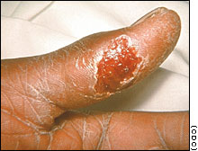
14.7 · Objective 1 — Bordetella pertussis and whooping cough
| Heading | Bordetella pertussis |
|---|---|
| Morphology | Minute, encapsulated coccobacillus |
| Disease | Pertussis, whooping cough: a communicable childhood acute respiratory syndrome, often with severe, life-threatening complications in babies; about half of cases are in children from birth to 4 years |
| Reservoir and transmission | Reservoir: apparently healthy carriers. Transmission by direct contact or inhalation of aerosols |
| Virulence | Receptors that recognize and bind ciliated respiratory epithelial cells; toxins that destroy and dislodge ciliated cells, destroy phagocyte activity, and cause hemolysis and leukolysis. Loss of the ciliary mechanism leads to a buildup of mucus and blockage of the airways |
| Stages | Catarrhal: nasal drainage, congestion, sneezing, occasional cough. Paroxysmal: recurrent persistent cough followed by a deep inhalation, the whoop. Complications come from compromised respiration |
| Treatment | Two weeks of erythromycin, azithromycin or trimethoprim-sulfamethoxazole (the slide uses the brand name Septra) |
| Prevention | DTaP (diphtheria, tetanus and acellular pertussis): an acellular vaccine containing toxoid and other antigens, a five-dose series between 2 months and 6 years; Boostrix for children and adolescents aged 10–18 |
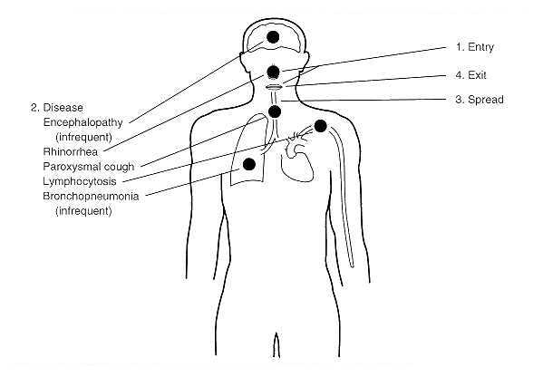
- Infants under 2 months are too young to be vaccinated (they cannot get the vaccine), so incidence is highest under 1 year old (in Florida in 2023, over half of reported cases were not up to date on vaccination).
- The age pattern in older children and adolescents reflects waning immunity from childhood vaccination and the need for booster doses.
- “Another possible connection”: pertactin-negative strains are now developing. Pertactin is the protein that helps the bacterium adhere to airway linings and a vaccine component, and these strains lack it.
14.8 · Objective 1 — Alcaligenes
An aerobe of the non-fermenting branch (14.2), not on the syllabus list. Lives primarily in soil and water and may become normal flora. Alcaligenes faecalis is the most common clinical species, isolated from feces, sputum and urine; it is occasionally associated with opportunistic pneumonia, septicemia and meningitis.
14.9 · Objective 1 — Legionella and legionellosis
| Heading | Legionella pneumophila |
|---|---|
| Morphology and stain | Weakly Gram negative; motile; rod shaped but pleomorphic, coccobacilli to filamentous |
| Culture | Cannot be easily cultured; grown on charcoal yeast extract agar |
| Habitat | Widely distributed in water: tap water, cooling towers, spas, ponds, air conditioning, supermarket vegetable sprayers. Lives in close association with amebas |
| Transmission | By aerosols. Outbreaks have come from a cooling tower and from the spray of a decorative fountain |
| Diseases | Legionellosis: Legionnaires disease (named for the 1976 epidemic of pneumonia among American Legion members at a convention in Philadelphia) and Pontiac fever |
| Who gets it | Males over 50; smokers; as a nosocomial disease, elderly patients with diabetes, cancer, transplants, chronic alcoholism or chronic lung disease |
| Manifestations | Fever, cough, diarrhea, abdominal pain, pneumonia |
| Treatment | Erythromycin with rifampin, azithromycin, quinolones |
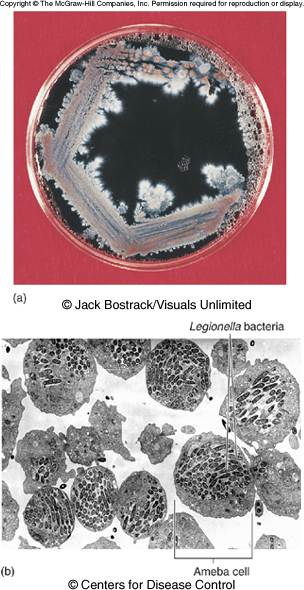
14.10 · Objective 1 — The Enterobacteriaceae: traits, media, antigens
The enterics are a large family of small, non-spore-forming Gram-negative rods. Many live in soil, water and decaying matter and are common occupants of the large bowel of animals, including humans. They are the most frequent cause of diarrheal disease, by enterotoxins or by invasive infection, and with Pseudomonas they account for almost half of nosocomial infections; they have been isolated from soap dishes, sinks, catheters and tracheal cannulas.
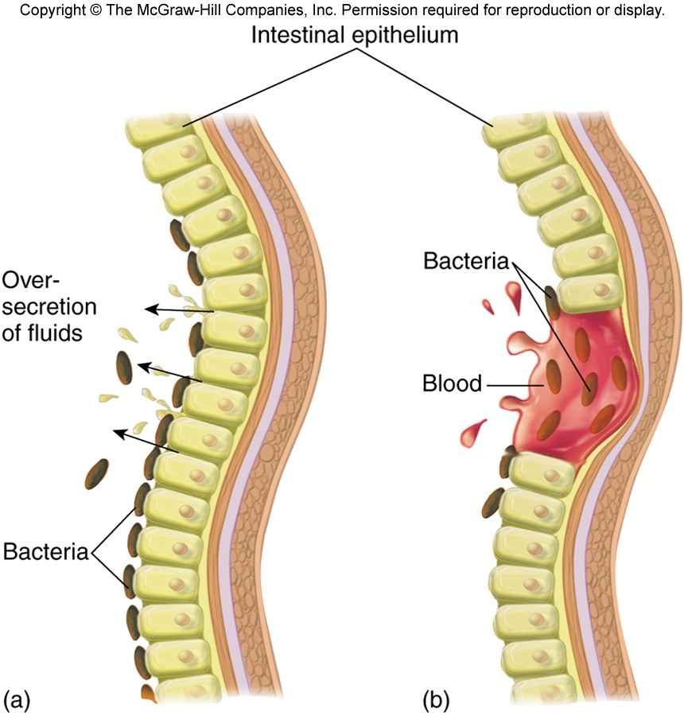
| Every enteric | Splits them |
|---|---|
| Facultative anaerobes, growing best in air. All ferment glucose, reduce nitrates to nitrites, are oxidase negative and catalase positive. All carry the O antigen | Lactose fermentation: coliforms ferment lactose, non-coliforms do not. Enrichment, selective and differential media screen samples for pathogens |
![Flow chart: enrichment, then plating on eosin methylene blue, MacConkey or Hektoen enteric agar, then triple sugar iron. Lactose and glucose positive organisms are sorted by motility, indole, hydrogen sulfide, Voges-Proskauer, citrate and lysine decarboxylase into Escherichia, Klebsiella, Enterobacter, Citrobacter, Erwinia, Kluyvera and Moellerella; lactose negative, glucose positive organisms by phenylalanine, hydrogen sulfide, citrate, motility, a galactosidase test, gelatinase and urease into Proteus, Providencia, Morganella, Serratia, Salmonella, Hafnia, Edwardsiella, Yersinia and Shigella.](micro-exam-3-study-guide-images/l14-s047-enteric-biochemistry.jpg)
| Isolation medium | Selective for | Differential for |
|---|---|---|
| Eosin methylene blue (EMB) agar | Gram-negative bacteria; the selective agents are the dyes eosin and methylene blue | Lactose fermenters |
| MacConkey’s agar | Gram-negative bacteria; the selective agents are crystal violet and bile salts | Lactose fermenters |
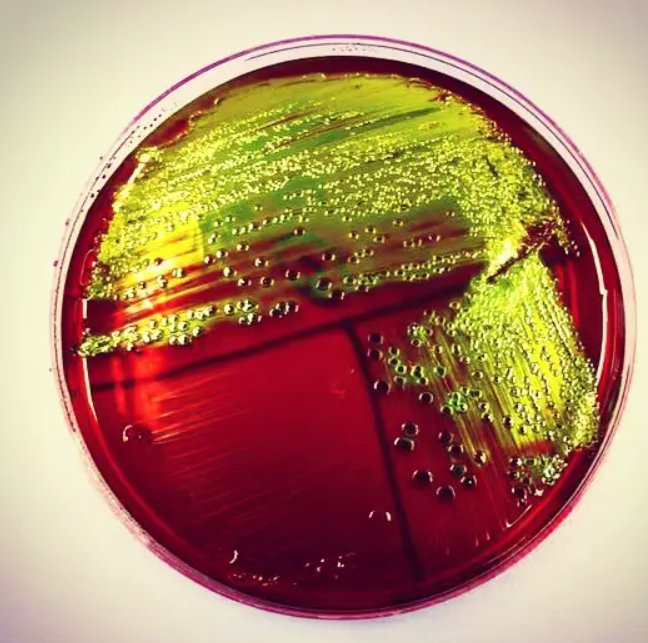
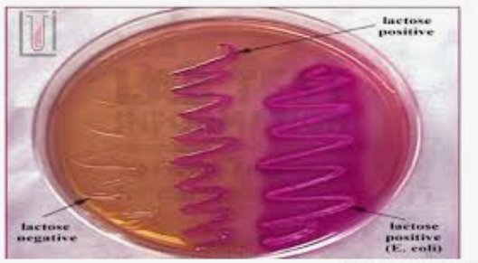
| In the normal flora: coliforms | In the normal flora: non-coliforms | True pathogens |
|---|---|---|
| Escherichia coli, Enterobacter, Klebsiella, Hafnia, Citrobacter, Serratia (slide 50; see 14.21) | Proteus, Providencia, Morganella, Edwardsiella | Enteric: Salmonella typhi, S. cholerae-suis, S. enteritidis; Shigella dysenteriae, S. flexneri, S. boydii, S. sonnei; Yersinia enterocolitica, Y. pseudotuberculosis. Nonenteric: Yersinia pestis |
The true pathogens are not normal flora: Salmonella typhi and the other salmonellae, Shigella and the enteric yersinias, and the nonenteric Yersinia pestis.
Antigens and virulence factors
Complex surface antigens contribute to pathogenicity and trigger the immune response:
- H — the flagellar antigen.
- K — the capsule and/or fimbrial antigen (Vi in Salmonella).
- O — the somatic or cell wall antigen, which all have.
Other virulence factors: endotoxin, exotoxins, capsules, fimbriae, attachment receptors for host cells, and the ability to transmit virulence genes (toxins, capsules, hemolysins, fimbriae).
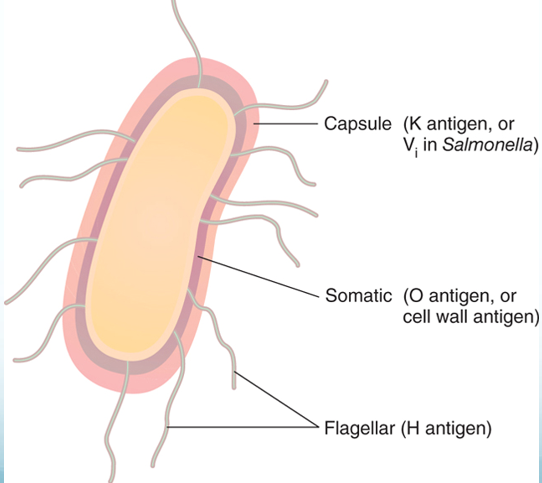
14.11 · Objective 1 — Escherichia coli and its four pathotypes
Escherichia coli is the common aerobic, non-fastidious bacterium of the gut, but not the most prevalent: the anaerobic Bacteroides and Bifidobacterium are. Of about 150 strains, some have developed virulence through plasmid transfer; others are opportunists.
“Hint, hint, hint, hint” [1:04:18]: the four pathotypes below, each with its mechanism, disease, source, test and prevention.
The diarrheal strains are acquired from fecally contaminated food and water (the entry-and-exit diagram of slide 56). Each of the four pathotypes, row by row:
| Pathotype | How it causes disease | Disease | Source and diagnosis | Treatment and prevention |
|---|---|---|---|---|
| Enterotoxigenic Escherichia coli (ETEC) | Enterotoxigenic Escherichia coli: heat-labile and heat-stable toxins promote secretion of fluid and electrolytes by the intestinal epithelium; fimbriae adhere it to the small intestine | Traveler’s diarrhea (most cases): diarrhea, cramping, low-grade to no fever | Fecally contaminated food and water | Fluid and electrolyte therapy; kaolin or Lomotil slow gut motility; bismuth salicylate counteracts the enterotoxin and is antimicrobial; fluoroquinolones |
| Enteroinvasive Escherichia coli (EIEC) | Enteroinvasive Escherichia coli: adhesin proteins bind the intestinal wall; no toxins, mechanical cell damage (it damages the wall mechanically, without toxins); an inflammatory disease of the large intestine, similar to shigellosis | Profuse bloody diarrhea and high fever; the very young and very old most susceptible; incubation within 24 hours | Fecally contaminated food and water; diagnosed by immunochemical tests, tissue culture and gene probes | Fluid and electrolyte therapy; trimethoprim-sulfamethoxazole |
| Enteropathogenic Escherichia coli (EPEC) | Enteropathogenic Escherichia coli: adheres to the intestinal lining and destroys the microvilli; inhibits uptake of vitamin B1 (thiamin) | The leading cause of the wasting form of infantile diarrhea; the greatest single cause of infant mortality worldwide | Fecally contaminated food and water | Fluid and electrolyte therapy; mecillinam, trimethoprim-sulfamethoxazole. Prevention: breast feeding |
| Enterohemorrhagic Escherichia coli (EHEC), O157:H7 | Enterohemorrhagic Escherichia coli, also called Shiga toxin-producing Escherichia coli: a cell wall receptor fuses with the host cell membrane, a portal for toxins including Shiga toxin (from Shigella), which binds ribosomes and disrupts protein synthesis; endothelial cells detach, platelets meet the subendothelium and coagulation starts; stress pathways release high tumor necrosis factor and interleukin 8 | Diarrhea, hemorrhagic colitis and hemolytic uremic syndrome (in 10% of cases: toxins cause apoptosis of renal tubular epithelial cells, and coagulation); gastroenteritis, dysentery, fever, acute abdominal pain | Reservoir: the intestines of cattle; contaminated beef, water and vegetables; a small infective dose (about 100 cells). Diagnosed on Rainbow agar, where O157:H7 colonies are black | Dialysis; corticosteroids “if diarrhea is not involved” (the slide’s wording); transfusions and plasmapheresis. Antibiotic therapy may exacerbate hemolytic uremic syndrome (it may worsen it) |
Enterohemorrhagic outbreaks have come from a fast-food beef patty and slivered onions (2024), romaine lettuce, raw milk and cheese, and chicken wraps (2026). Rainbow agar carries chromogenic substrates for beta-galactosidase (blue/black) and beta-glucuronidase (red); O157:H7 is glucuronidase negative, so its colonies come up black. Enterohemorrhagic infection is managed with dialysis, transfusions and plasmapheresis, and antibiotic therapy is approached with caution because it may worsen hemolytic uremic syndrome.
The name O157:H7 reads the antigens of 14.10: O (somatic) antigen type 157 and H (flagellar) antigen type 7.
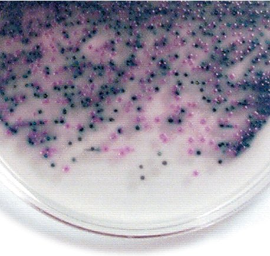
Escherichia coli outside the gut. It causes most urinary tract infections, more frequently in women and in catheterized patients; also neonatal meningitis, pneumonia, septicemia, wound infections and complications of invasive procedures. The coliform count is the indicator of fecal contamination in water.
14.12 · Objective 1 — The other coliforms
Clinically important mainly as opportunists and for antibiotic resistance.
| Organism | Distinguishing feature | Infections |
|---|---|---|
| Klebsiella pneumoniae | A normal inhabitant of the respiratory tract; a large capsule | Nosocomial pneumonia, meningitis, bacteremia, wound infections, urinary tract infections |
| Enterobacter species | Serious if in the bloodstream | Urinary tract and surgical wound infections; spinal fluid, sputum, blood |
| Citrobacter species | — | Opportunistic urinary tract infections and bacteremia |
| Serratia marcescens | Red pigment, prodigiosin | Pneumonia in chronic alcoholics; burn and wound infections; urinary tract infections (often asymptomatic, after surgery or instrumentation); septicemia and meningitis, particularly in the immunocompromised |
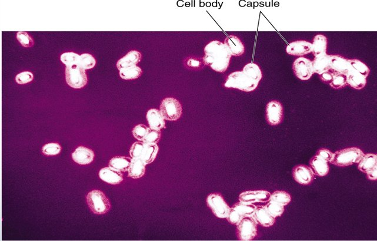
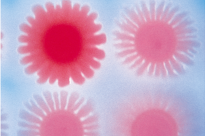
14.13 · Objective 1 — Proteus and its relatives
The noncoliform, lactose-negative enterics fall into opportunists (Proteus, Morganella, Providencia) and true pathogens with true virulence factors, not normal flora (Salmonella, Shigella). The opportunists are ordinarily harmless saprobes in soil, manure, sewage and polluted water and commensals of humans and animals, often resistant to antibiotics.
| Organism | Features | Infections |
|---|---|---|
| Proteus | Highly motile, with peritrichous flagella; diagnostic wavelike, swarming growth (Proteus vulgaris); most respond to ampicillin and cephalosporins | Urinary tract and wound infections, pneumonia, septicemia, infant diarrhea; nosocomial infections; related to bladder and kidney stones (an association, not a proven cause); associated with Crohn’s disease |
| Providencia species | Multiple animal reservoirs; almost always resistant to tetracyclines, older penicillins and cephalosporins | Nosocomial infections; urinary tract infections with catheters; gastroenteritis |
| Morganella morganii | Multidrug resistant, though most strains are naturally susceptible to several drug classes | Nosocomial; similar to Proteus: urinary tract and wound infections |
Proteus vulgaris is diagnosed on the plate by its wavelike, swarming growth: highly motile on its peritrichous flagella, it spreads across the agar in waves.
14.14 · Objective 1 — Salmonella: typhoid and the salmonelloses
Salmonella typhi causes typhoid fever and Salmonella paratyphi paratyphoid fever, the most serious diseases of the genus.
| Heading | Salmonella typhi (S. enterica serotype typhi) and S. paratyphi |
|---|---|
| Significance | The most serious pathogens of the genus: typhoid fever and paratyphoid fever |
| Host | Humans are the exclusive hosts |
| Traits | Flagellated; survive outside the host; resistant to chemicals: bile and dyes; do not lose virulence on cultivation |
| Transmission | Ingestion of fecally contaminated food or water; occasionally close personal contact. “Boil it, cook it, peel it, or forget it.” |
| Carriers | Asymptomatic carriers; some chronic carriers shed bacilli from the gallbladder |
| Pathogenesis | Bacilli adhere to the small intestine and cause an invasive diarrhea that leads to septicemia; carried to the liver and spleen; the intestinal wall can ulcerate and perforate |
| Manifestations | Sustained fever of 103–104 degrees; a rash of rose-colored spots; weakness, stomach pains, loss of appetite |
| Treatment | Chronic infections: chloramphenicol or trimethoprim-sulfamethoxazole |
| Prevention | Two vaccines for temporary protection: oral (4 doses) and injected (1 dose) |
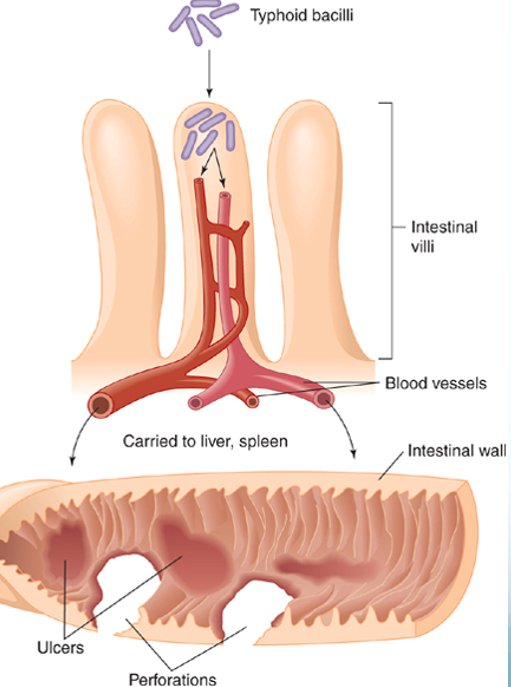
The animal salmonelloses. Salmonelloses other than typhoid fever are called enteric fevers, Salmonella food poisoning and gastroenteritis. They are usually less severe than typhoid fever but more prevalent (some 40,000–50,000 cases a year). Salmonella is normal intestinal flora in animals: S. cholerae-suis is a zoonosis of swine; S. enteritidis covers about 1,700 serotypes, all zoonotic in origin, though humans can become carriers. They are acquired by ingestion, from cattle, poultry and eggs, rodents, reptiles (pet turtles, bearded dragons), animal and dairy products, backyard flocks, and fomites contaminated with animal intestinal flora; food-borne outbreaks have come from cucumbers and charcuterie meats. Enteric fevers bring fever and septicemia; gastroenteritis brings vomiting, diarrhea and fluid loss. Treatment: chloramphenicol and trimethoprim-sulfamethoxazole.
14.15 · Objective 1 — Shigella and bacillary dysentery
| Heading | Shigella |
|---|---|
| Species | S. dysenteriae, S. sonnei, S. flexneri, S. boydii |
| Disease | Shigellosis, an incapacitating dysentery: abdominal cramps and watery stool with blood; a few cases also develop hemolytic uremic syndrome. Half of cases are in children under 5 |
| Transmission | Ingestion of fecally contaminated food |
| Pathogenesis | Invades the villi of the large intestine (it invades the large-bowel villi); does not perforate the intestine or invade the blood; enters Peyer’s patches and sets off inflammation |
| Toxins | Endotoxin initiates the fever; enterotoxin damages the mucosa and villi, causing bleeding and mucus secretion |
| Treatment | Fluid replacement; ciprofloxacin and trimethoprim-sulfamethoxazole |
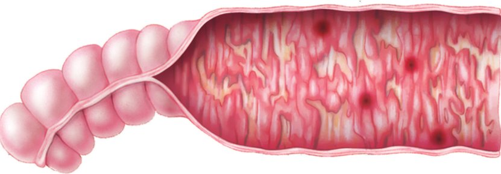
14.16 · Objective 1 — The enteric yersinias
- Yersinia enterocolitica: from domestic and wild animals, fish, fruits, vegetables and water. The bacteria enter the small intestinal mucosa; some enter the lymphatics and survive in phagocytes. Inflammation of the ileum can mimic appendicitis.
- Yersinia pseudotuberculosis: an infection similar to Y. enterocolitica, with more lymph node inflammation.
- Treatment is mostly supportive (aminoglycosides and trimethoprim-sulfamethoxazole).
14.17 · Objective 1 — Yersinia pestis and plague
| Heading | Yersinia pestis (nonenteric) |
|---|---|
| Morphology | Tiny Gram-negative rod with unusual bipolar staining and capsules |
| Virulence | Capsular and envelope proteins protect against phagocytosis and foster intracellular growth; coagulase, endotoxin, murine toxin |
| Reservoir | About 200 species of mammals, rodents, without causing them disease. In the United States, cases are west of the Mississippi (a handful a year) |
| How humans get it | Contact with wild animals (sylvatic plague), domestic or semidomestic animals (urban plague), or infected humans (rare) |
| The flea | The bacteria replicate in the flea’s gut; coagulase causes blood clotting that blocks the esophagus; the flea becomes ravenous and tries to bite more hosts; regurgitated material transmits the bacterium |
| Infective dose | Very small: 3–50 bacilli |
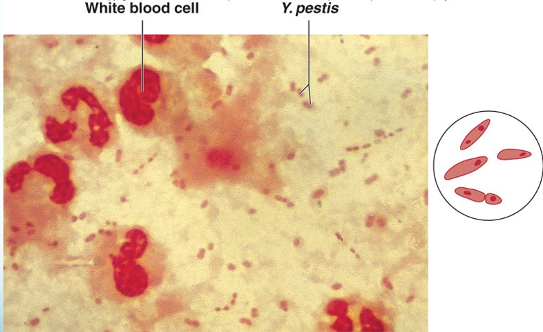
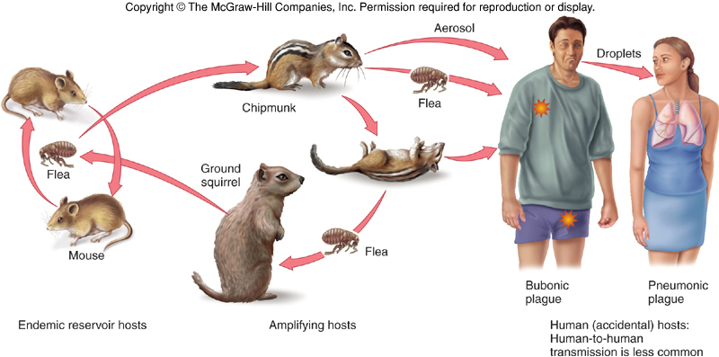
| Form of plague | What happens |
|---|---|
| Bubonic | The bacillus multiplies in the flea bite, enters the lymph, and causes necrosis and swelling of a lymph node: the bubo, a swollen, necrotic lymph node in the groin or axilla (the classic sign) |
| Septicemic | Progression to massive bacterial growth; virulence factors cause intravascular coagulation, subcutaneous hemorrhage and purpura that degenerates into necrosis and gangrene (the purpura turns to gangrene): the black plague |
| Pneumonic | Infection localized to the lungs, highly contagious by aerosol, fatal without treatment |
Diagnosis, treatment, prevention. It must be diagnosed quickly: death can come within 2 days of symptoms. Diagnosis rests on history, symptoms and laboratory findings from aspiration of the buboes. Treatment: streptomycin, tetracycline or chloramphenicol. A killed or attenuated vaccine is available for military personnel, veterinarians and laboratory workers. Prevention by quarantine and control of the rodent population in human habitats. A park warning sign (slide 86) spells out the same advice: chipmunks, ground squirrels and other wild rodents may be infected; plague reaches humans by the bite of an infected flea or by handling an infected animal; protect pets from fleas, avoid animal burrows, and never touch sick or dead animals.
14.18 · Objective 1 — Pasteurella multocida
Pasteurella multocida is, with Haemophilus, one of the oxidase-positive nonenteric pathogens: a zoonotic genus, normal flora in animals. Its opportunistic infections are mostly in veterinarians, but they can come from domestic animals: Pasteurella reaches people through animal bites or scratches, which cause a local abscess that can spread to joints, bones and lymph nodes. The immunocompromised are at risk of septicemia and complications of the central nervous system and heart. Treatment: penicillin and tetracycline.
14.19 · Objective 1 — Haemophilus
Haemophilus means blood loving: tiny Gram-negative pleomorphic rods, fastidious, sensitive to drying, temperature extremes and disinfectants. None can grow on blood agar without special techniques: chocolate agar (cooked blood) is used, because they require hemin, nicotinamide adenine dinucleotide (NAD) or its phosphate (NADP): they need hemin from the cooked blood. Some species are normal colonists of the upper respiratory tract or vagina; others are virulent.
| Species | Disease | Spread and who | Treatment and prevention |
|---|---|---|---|
| H. influenzae | Misnamed as the cause of the flu. Acute bacterial meningitis (fever, vomiting, stiff neck, neurological impairment), epiglottitis, otitis media, sinusitis, pneumonia, bronchitis | — | Chloramphenicol and ampicillin; vaccine: the subunit vaccine Hib (Haemophilus influenzae type b) |
| H. aegyptius | Conjunctivitis, pink eye | Primarily children; spread by contaminated fingers and insects | Antibiotic eyedrops |
| H. ducreyi | Chancroid, a sexually transmitted disease | Primarily in the tropics; primarily males | Erythromycin |
| H. parainfluenzae and H. aphrophilus | Infective endocarditis in congenital and rheumatic heart disease | Normal oral and nasopharyngeal flora; from routine dental procedures | Ciprofloxacin |
Invasive H. influenzae disease in the United States (1994–2020) is now mostly nontypeable strains; type b, the vaccine’s target, has become the rarest (slide 99).
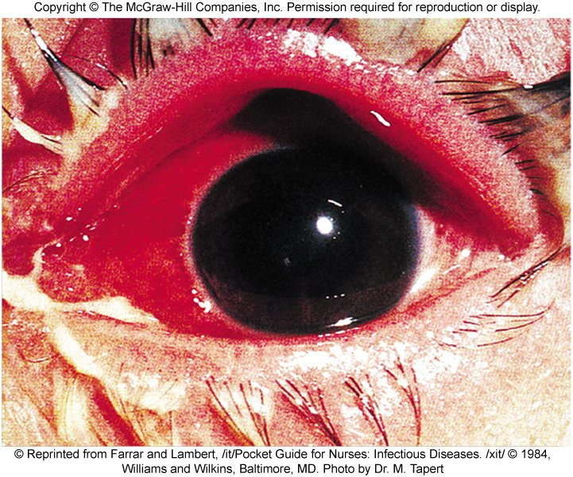
14.20 · Objective 2 — Modes of transmission
| Organism | How humans acquire it |
|---|---|
| Pseudomonas aeruginosa | Soil and water; nosocomial, from contaminated ventilators, intravenous solutions and anesthesia equipment (biofilms); contact lenses (corneal ulcers), water (swimmer’s ear) |
| Burkholderia pseudomallei | Tropical soil and water, by penetrating injury or inhalation |
| Acinetobacter baumannii | Nosocomial and community; months on fomites; traumatic and combat wounds |
| Stenotrophomonas maltophilia | Biofilms on disinfectants, dialysis and respiratory equipment, water dispensers and catheters |
| Brucella | Zoonosis: animal handling and slaughtering (blood, urine, placentas) or unpasteurized dairy; through damaged skin or mucous membranes; human-to-human rare |
| Francisella tularensis | Infected animals (rabbits), water and dust, or vector bites |
| Bordetella pertussis | From apparently healthy carriers by direct contact or inhaled aerosols |
| Legionella | Aerosols from water systems (cooling towers, spas, fountains, air conditioning, vegetable sprayers) |
| Enterics in hospitals | Soap dishes, sinks, catheters, tracheal cannulas |
| Escherichia coli diarrheal strains | Fecally contaminated food and water; O157:H7 from cattle via beef, water and vegetables |
| Escherichia coli urinary tract infection | Women; catheterized patients |
| Providencia | Multiple animal reservoirs; catheters |
| Salmonella typhi | Humans only: fecally contaminated food or water, occasionally close contact; chronic gallbladder carriers |
| Animal salmonelloses | Ingestion from cattle, poultry and eggs, rodents, reptiles, dairy, backyard flocks, contaminated fomites |
| Shigella | Ingestion of fecally contaminated food |
| Yersinia enterocolitica | Animals, fish, fruits, vegetables, water |
| Yersinia pestis | Flea bite (regurgitation by a blocked flea); handling infected animals; aerosol in pneumonic plague; sylvatic (wild animals) or urban (domestic animals) |
| Pasteurella multocida | Animal bites or scratches |
| Haemophilus | H. aegyptius: fingers and insects. H. ducreyi: sexual. H. parainfluenzae and H. aphrophilus: own oral flora, during dental procedures |
14.21 · Where the slides disagree, and where current practice differs
The slides are what is taught and tested; where they disagree with each other, the point is not keyed in the quizzes. Notes:
- Serratia and Hafnia: coliform or not? Slide 50 lists both among the coliforms (lactose fermenters), and slide 68 calls Serratia a coliform; Table 20.1 (slide 12) and the biochemical tree (slide 47) put both on the non-lactose-fermenting branch. (Serratia is in fact a slow, late lactose fermenter.) In the recording she calls Serratia “also a coliform” [1:23:06], as slides 50 and 68 do, but the scheme of slide 12 still disagrees, so no question asks their lactose status.
- Which Haemophilus causes childhood meningitis? Slide 97 names H. parainfluenzae and H. ducreyi as the virulent species “responsible for childhood meningitis, and chancroid”; slide 98 gives meningitis to H. influenzae, and slide 100 calls H. parainfluenzae normal oral flora that causes endocarditis. Go by slides 98 and 100. Reading slide 97 aloud, she named no species: some species are normal flora, “and then other species are responsible for childhood meningitis and chancroid” [2:00:50], and she then gave meningitis to H. influenzae [2:01:23].
- “Motile, oxidase positive” is given to Burkholderia, Acinetobacter and Stenotrophomonas together (slide 21). In fact Acinetobacter is nonmotile and oxidase negative, and Lecture 9 taught Acinetobacter baumannii among the Gram-negative cocci (it is a coccobacillus). Not keyed; their shared traits are keyed as obligate aerobes that do not ferment sugars.
- The World Health Organization list (slide 17). The 2017 list put carbapenem-resistant Pseudomonas aeruginosa among the critical pathogens with Acinetobacter baumannii and the resistant Enterobacteriaceae; the 2024 update moved it to the high-priority group. Not keyed.
- Boostrix (slide 31) is given for ages 10–18 on the slide; it is licensed from age 10 through adulthood, including pregnancy. Not keyed.
- Drug lists. Several treatment lines reflect older practice (chloramphenicol for typhoid and for H. influenzae meningitis, erythromycin with rifampin for Legionella, streptomycin for plague); current regimens differ. Doses on slide 56 are not reproduced. Which antibiotic treats what is not asked in the quizzes; the non-drug methods (fluids and electrolytes, dialysis and plasmapheresis, vaccines, breast feeding, quarantine, combination therapy for multidrug resistance) are.
- Spellings. The deck’s “Acinetobacter baumanii” is Acinetobacter baumannii; “Salmonella typhhi” Salmonella typhi; “Mecillianam” mecillinam; “sulfatrimethoprim” and “Sulfamethoprim” are trimethoprim-sulfamethoxazole.
Source: Gram Negative Bacilli of Medical Importance (Lecture 14 Dr. Webster Gram Negative Bacilli of Medical Importance.pptx), Slides 1–101, and the PAJ 5200 syllabus instructional objectives.
15 · Fungi of Medical Importance
Dr. Fair · Lecture 15 · 30 October 2026
Instructional Objectives
- Compare and contrast the morphology, medium, laboratory tests, biochemical reactions, diseases, clinical manifestations, methods of treatment, and prevention of fungi of medical importance.
- Describe the modes of transmission by which humans acquire fungi of medical importance.
Not read yet. This lecture was recorded on 30 October and the recording is being transcribed (ours, plus Notability’s own transcript as a second opinion). Until it has been read, this section is built from the slides alone: the quizzes are weighted by slide count, and the only emphasis marked is the slides’ own (“Focus on the Latin names for each body part/region” on slide 43, 15.13). When the recording has been read, this box will carry what Dr. Fair stressed, what she said to skip, and any correction of a slide.
15.1 · Objective 1 — True and opportunistic fungal pathogens
Molds and yeasts are widely distributed in air, dust, fomites and the normal flora of humans, plants and animals. Humans are relatively resistant to fungal infections as long as the immune system is competent; immunocompromised status is the serious consideration throughout this lecture. Fungi are relatively nonpathogenic: of about 100,000 fungal species only about 300 (0.3%) have been linked to disease in humans and animals. But fungi are the most common plant pathogens (potato blights, infected grape crops and fruit trees), which can cause huge socio-economic losses such as the potato famines in Ireland and Eastern Europe. Human mycoses (“myco” = fungi) are caused by true fungal pathogens and by opportunistic pathogens.
| Kind of pathogen | Definition | Key adaptation | Levels of disease | Immunity afterwards |
|---|---|---|---|---|
| True (primary) fungal pathogen | Can invade and grow in a healthy host | Switching from hyphal cells to yeast cells (multicellular to unicellular) with temperature: thermal dimorphism (15.2) | May cause systemic, subcutaneous, cutaneous and superficial mycoses | Long-term immunity can develop against a few true fungal pathogens |
| Opportunistic fungal pathogen | Has little or no virulence of its own; the host defenses must be impaired (human immunodeficiency virus infection, cancer, diabetes, chronic obstructive pulmonary disease, autoimmune disorder, nosocomial infection) | Few, if any, virulence factors; infection usually starts in an immunocompromised host. Consider predisposing factors: primary illness, corticosteroids, diabetes, cancer | From superficial colonization of external tissues to potentially fatal systemic disease of one or more organ systems | Reinfection is highly likely (think of recurring vaginal yeast infection or foot fungus) |
An emerging medical concern. Mycoses account for about 10% of all nosocomial infections, and the proportion is rising. Dermatophytes (residents of human and animal skin) may be undergoing a gradual transformation to become true pathogens.
15.2 · Objective 1 — Thermal dimorphism
The most striking adaptation of a true pathogen to survival and growth in the human host is the ability to switch from hyphal cells to yeast cells, from multicellular to unicellular forms, with the corresponding change in temperature. Thermal dimorphism: the fungus grows as a mold (multicellular) at 30 °C and as a yeast (unicellular) at 37 °C, which is human body temperature.
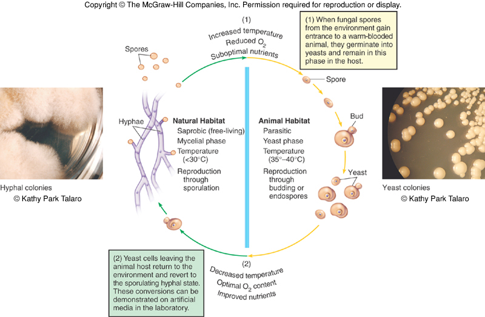
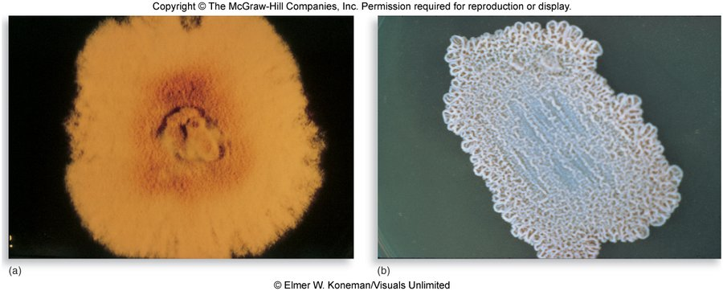
15.3 · Objective 1 — The fungal priority pathogens list
The World Health Organization announced its first-ever fungal priority pathogens list in October 2022, to complement its bacterial priority pathogens list of 2017. Worldwide, drug-resistant bacteria directly cause over 1 million deaths a year and contribute to another 5 million; drug-resistant fungi are rapidly becoming a concern. With closer attention to nosocomial and secondary infections, invasive fungal diseases have been found to be increasing, especially among immunocompromised populations. The catch: fungal infections get little attention compared with bacterial or viral infections, and so less money for research and development (detection, diagnosis, treatment, new drugs).
| Priority | Fungi on the list |
|---|---|
| Critical | Cryptococcus neoformans (“the number one critical fungal pathogen”, slide 56), Aspergillus fumigatus (number three, slide 60), Candida albicans, Candida auris |
| High | Other Candida species, eumycetoma causative agents, Fusarium species, Histoplasma species, Mucorales (mucormycosis opportunists) |
| Medium | Coccidioides, Cryptococcus gattii, Pneumocystis jirovecii, Paracoccidioides species |
15.4 · Objective 1 — Epidemiology, pathogenesis and host defense
- Most fungal pathogens do not require a host to complete their life cycles, and these infections are generally not communicable to other persons.
- The exceptions: dermatophytes (literally “skin plants”) and Candida species naturally inhabit the human body and are transmissible from person to person, or by fomites such as shared exercise equipment.
- True fungal pathogens are distributed in predictable geographical patterns, coinciding with climate and soil requirements (the map in 15.7).
- Dermatophytoses are the most prevalent fungal diseases, and many cases go undiagnosed or are misdiagnosed (for example as skin-related allergies or autoimmune disorders).
| Type of mycosis | Portal of entry (slide 14) |
|---|---|
| Primary (systemic) mycoses | Respiratory: spores inhaled from the air |
| Subcutaneous | Inoculated into skin or nails: trauma |
| Cutaneous and superficial | Contamination of the skin or hair surface |
Virulence factors: thermal dimorphism, toxin-like substances, capsules and adhesion factors, hydrolytic enzymes, inflammatory stimulants.
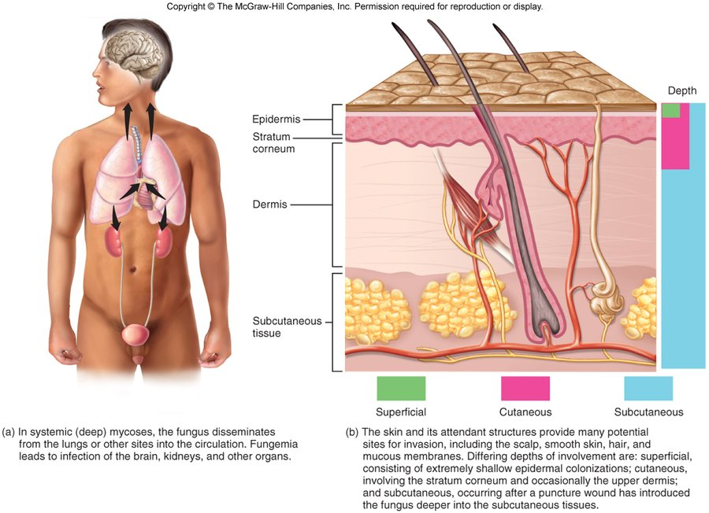
Host defense
The main antifungal defenses are the integrity of the skin, mucous membranes and intact respiratory cilia. The most important defenses are cell-mediated immunity (T cells and their cytokines), phagocytosis and inflammation. Long-term immunity can develop against only a few true fungal pathogens, not the opportunists: reinfection is highly likely with opportunistic fungi (the repeated “episodes” of vaginal yeast infection or foot fungus).
15.5 · Objective 1 — Diagnosis
Diagnosis and identification need microscopic examination of stained specimens, culture on selective and enriched media, and specific biochemical or serological tests. Sabouraud dextrose agar is commonly used, with chemicals added to inhibit bacterial growth; its fairly low pH inhibits most bacteria, but not fungi.
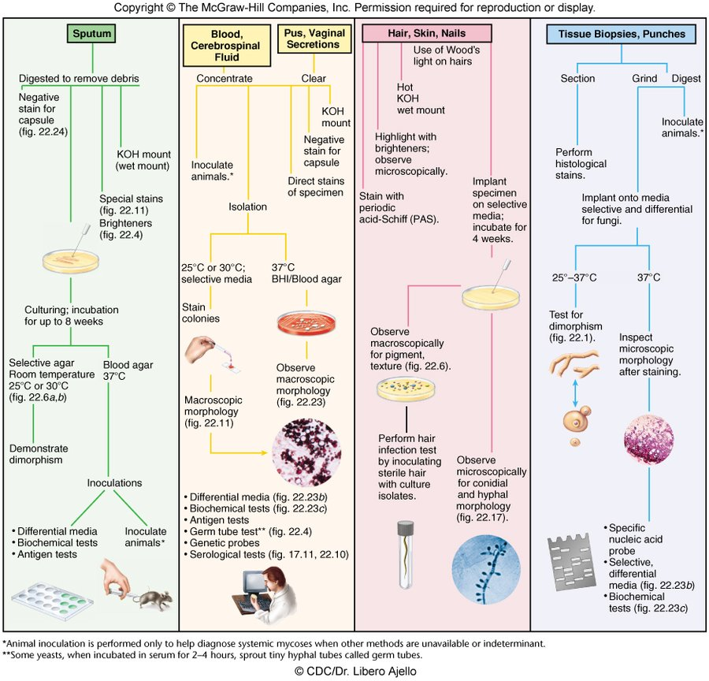
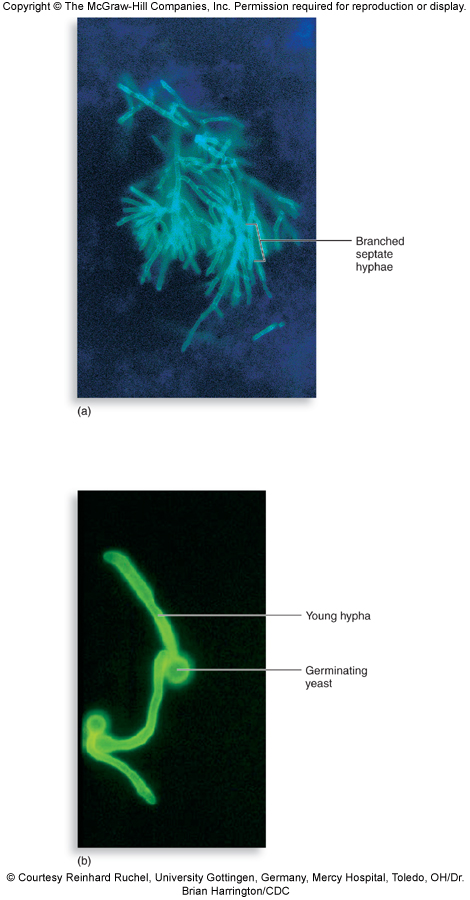
15.6 · Objective 1 — Control and amphotericin B
- Immunization is typically ineffective for preventing fungal infections, because reinfection is exceedingly common.
- Antifungal drugs: amphotericin B, flucytosine, azoles and nystatin.
- In some cases surgical removal of damaged tissue is necessary.
- Prevention is essentially limited to high-quality respirator masks and protective clothing and hygiene, to reduce contact with fungal spores.
| Amphotericin B | Slide 20 |
|---|---|
| Standing | The drug of choice for many fungal infections: highly toxic and often expensive |
| Source | Produced by a soil bacterium of the genus Streptomyces; it attacks fungal cells, which are eukaryotic |
| Mechanism | Forms complexes with fungal cell membrane lipids, causing openings and seepage of cytoplasmic ions |
| Why it is toxic | Not selective enough to attack only fungi: fungi and humans are both eukaryotes |
| Side effects | Fatigue, weakness, fever and arrhythmia; sometimes known as “ampho-terrible” |
| Routes | Called versatile on the slide (topical, oral, intramuscular or intravenous; see 15.23) |
15.7 · Objective 1 — Systemic mycoses: the true fungal pathogens
Mycoses are organized by type, level of infection and degree of pathogenicity (15.1). The systemic infections of the true pathogens share a pattern (slide 24):
- Each true fungal pathogen is restricted to certain endemic regions of the world.
- Infection occurs when soil or other matter (such as animal waste) containing the conidia is disturbed.
- The spores germinate in the lungs, producing yeast or yeast-like cells: thermal dimorphism at work.
- Infection can become systemic in some hosts; spores may also be inoculated into broken skin.
- The diseases of the true fungal pathogens can result in immunity in a competent host.
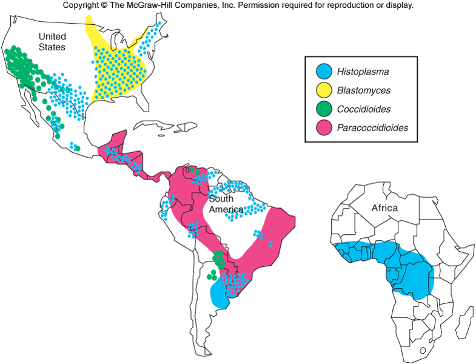
| Pathogen | Disease (nickname) | Where | Soil | Signature | Treatment on the slide |
|---|---|---|---|---|---|
| Histoplasma capsulatum | Histoplasmosis, “Ohio Valley fever” | Eastern and central United States; worldwide; Latin America, Africa | Moist, high-nitrogen soil, bird and bat guano | The most common true fungal pathogen; not person to person | Amphotericin B and azoles |
| Coccidioides immitis | Coccidioidomycosis, “Valley fever” | Southwestern United States, Mexico, Central and South America | Alkaline, salty soils of semiarid, hot climates | Block-like arthroconidia; spherules with endospores in the lungs | Amphotericin B; most cases need no treatment |
| Blastomyces dermatitidis | North American blastomycosis | Midwestern and southeastern United States, southern Canada | Rich organic matter: forest soil, decaying wood, animal manure | May be mistaken for lung cancer on chest X-ray | Amphotericin B |
| Paracoccidioides brasiliensis | Paracoccidioidomycosis | Central and South America (Brazil, Colombia, Venezuela, Argentina, Paraguay) | Cool, humid soils | The rarest primary mycosis | Ketoconazole, amphotericin B, sulfa drugs |
15.8 · Objective 1 — Histoplasma capsulatum: histoplasmosis, “Ohio Valley fever”
- The most common true fungal pathogen; causes histoplasmosis. Thermally dimorphic (the two colonies in 15.2).
- Distributed worldwide; known in the eastern and central regions of the United States, and now recognized as endemic in parts of Latin America and Africa.
- Grows in moist soil with high nitrogen content, especially soil containing bird and bat guano.
- Inhaled conidia produce a primary pulmonary infection that may progress to systemic involvement of a variety of organs, the central nervous system, and chronic lung disease. It is NOT transmitted person to person.
- Treatment: amphotericin B and azoles are common options.
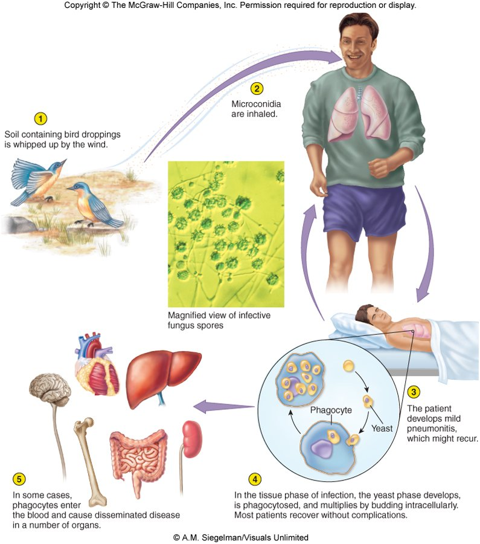
15.9 · Objective 1 — Coccidioides immitis: coccidioidomycosis, “Valley fever”
- Mainly in the southwestern United States, extending to Mexico and Central and South America. Exposure comes with farming, road construction and repair, archaeological digs, landslides and dust storms. It remains dormant in winter and spring.
- Significant risk factors: people of African or African-American descent, increasing age (over 40–60 years), and environmental or occupational exposure to dust and soil.
- Distinctive morphology: block-like arthroconidia in the free-living stage, and spherules containing endospores in the lungs.
- Lives in alkaline, salty soils in semiarid, hot climates; its spread is greatly enhanced by cycles of drought and heavy rain, followed by windstorms.
- Arthrospores inhaled from dust create spherules and can form nodules in the lungs.
- Prevention: oiling roads, planting to minimize erosion, and dust masks to reduce inhalation of spores.
- Treatment: amphotericin B is the most common option, but most cases do not require any treatment at all.
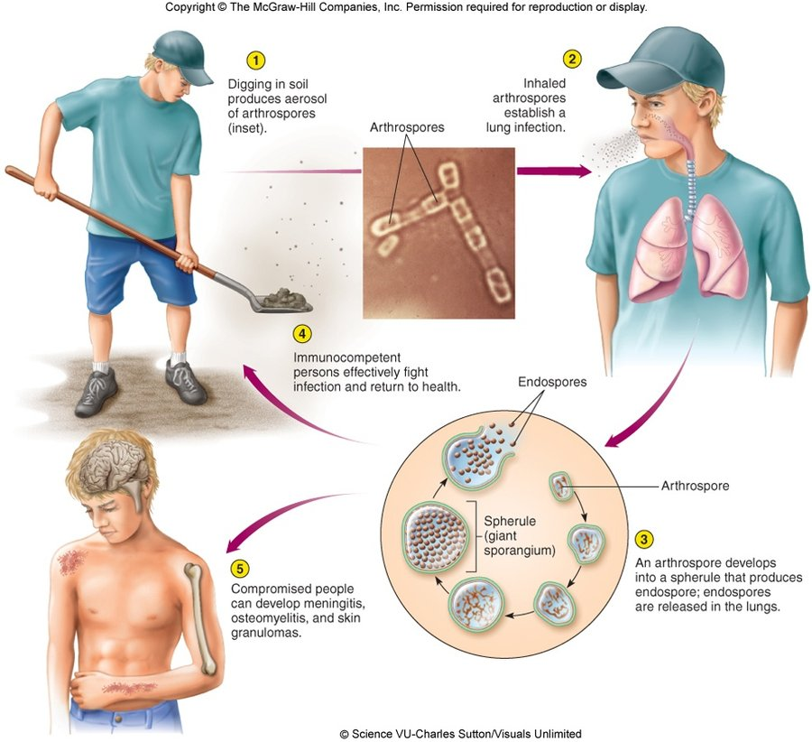
15.10 · Objective 1 — Blastomyces dermatitidis: North American blastomycosis
- A dimorphic fungus that inhabits rich organic matter: forest soil, decaying wood, animal manure.
- Free-living, mainly in the soil of a large section of the midwestern and southeastern United States, and in southern Canada; dormant in warm, dry weather, then sporulates in colder, wetter weather. Also reported in South and Central America, Africa and the Middle East.
- Inhaled conidia (10–100) convert to yeasts and multiply in the lungs; the infection may be mistaken for lung cancer on a chest X-ray.
- Symptoms: cough, chest pain and fever, in humans, dogs, cats and horses.
- Chronic cutaneous nodules, with later bone and nervous system complications.
- Treatment: amphotericin B is the most common option.
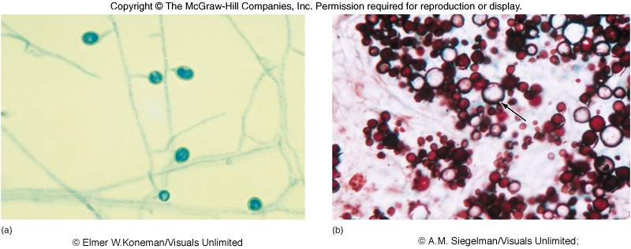
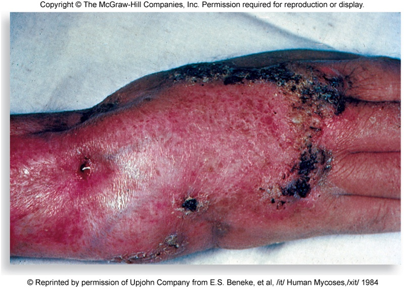
15.11 · Objective 1 — Paracoccidioides brasiliensis: paracoccidioidomycosis
- Endemic in Central and South America, mainly the cool, humid soils of Brazil, Colombia, Venezuela, Argentina and Paraguay; the rarest of the primary mycoses. Most studies in the World Health Organization report were among human immunodeficiency virus-positive patients in Brazil.
- Lung or skin infection occurs through inhalation or inoculation of spores, respectively.
- Most at risk: rural farm workers and harvesters, where poor nutrition is a predisposing factor; male, over 40 years old.
- Systemic disease is not common; these are usually mild, self-limiting infections.
- Treatment: ketoconazole, amphotericin B and sulfa drugs are commonly used.
15.12 · Objective 1 — Subcutaneous mycoses: Sporothrix schenckii
Subcutaneous mycoses occur when fungi are transferred directly into traumatized skin and invade the damaged site. Most species in this group are greatly inhibited by the higher temperatures of the blood and viscera, so they rarely disseminate through the body. These diseases are progressive and may destroy skin and underlying tissue.
- Sporotrichosis, “rose-gardener’s disease”, usually comes from a puncture wound: a thorn, wood, bare roots.
- A very common saprobic fungus (one that derives its nutrition from dead or decaying matter) that decomposes plant matter in soil. Garden center workers, plant nurseries and people who handle pine straw or hay bales may be at risk.
- Infects appendages and lungs (humans, horses, dogs, cats and mules; in animals it is often seen in the feet, claws or hooves).
- Treatment: heat packs and/or super-saturated potassium iodide; systemic infections with amphotericin B and/or itraconazole.
- The lymphocutaneous variety: contaminated plant material penetrates the skin, the pathogen forms a nodule, then spreads to nearby lymph nodes.
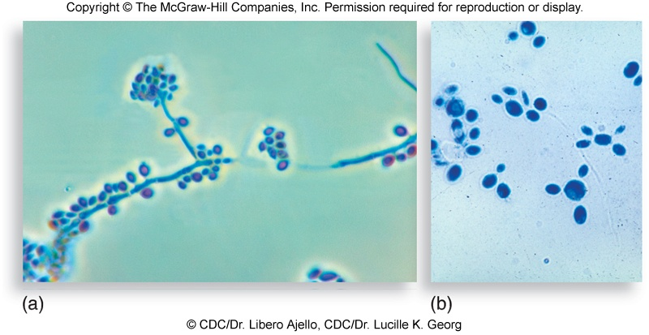
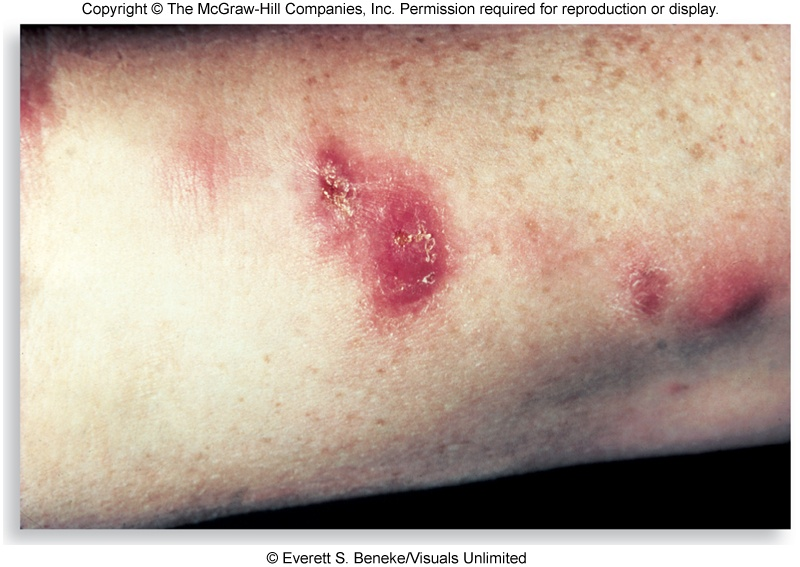
15.13 · Objective 1 — Cutaneous mycoses: the dermatophytes
- Infections strictly confined to keratinized epidermis (skin, hair, scalp, nails) are called dermatophytoses: “ringworm” and “tinea”.
- They involve 39 species in three genera: Trichophyton, Microsporum and Epidermophyton, all closely related and morphologically similar. The actual causative agent of “ringworm” varies case to case.
- Natural reservoirs: humans, animals and soil.
- What promotes infection: the hardiness of the spores, the presence of abraded skin, and close person-to-person or person-to-fomite contact.
- A long infection period followed by localized inflammation and allergic reactions to fungal proteins.
“Focus on the Latin names for each body part/region” (slide 43).
| Name | Body site | What the slides say |
|---|---|---|
| Tinea capitis | Scalp | Scalp and hair-bearing regions of the head; hair may be lost; common in children |
| Tinea barbae | Beard | Chin and beard of adult males; contracted mainly from animals |
| Tinea corporis | Body | Inflamed, red ring lesions anywhere on smooth skin; contact, clothing, bedding |
| Tinea cruris | Groin | “Jock itch”: groin and scrotal regions; pervasive among athletes and crowded living conditions |
| Tinea pedis | Foot | Spread by exposure to public surfaces; between the digits and on the soles; rare where people usually go barefoot |
| Tinea manuum | Hand | Paired with tinea pedis on the slide: public surfaces; between the digits |
| Tinea unguium | Nails | A persistent colonization of the nails of the hands and feet that distorts the nail bed; nail extensions may provide a portal of entry |
Treatment of dermatophytoses most often uses topical antifungal agents: azoles applied for several weeks, which may be partnered with oral antifungal drugs if needed. Debridement of the skin and ultraviolet light treatments have also been successful.
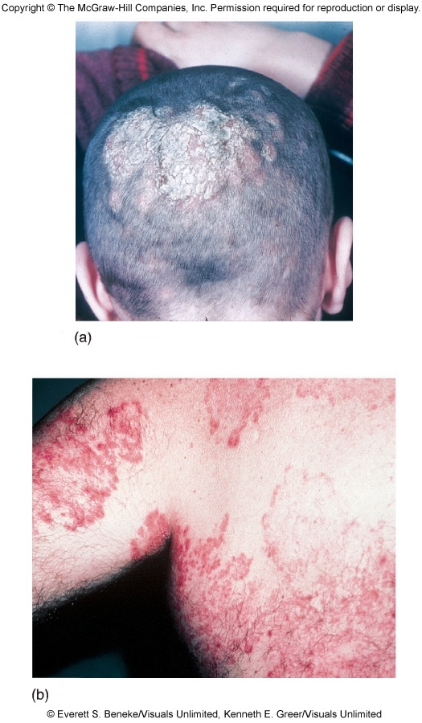
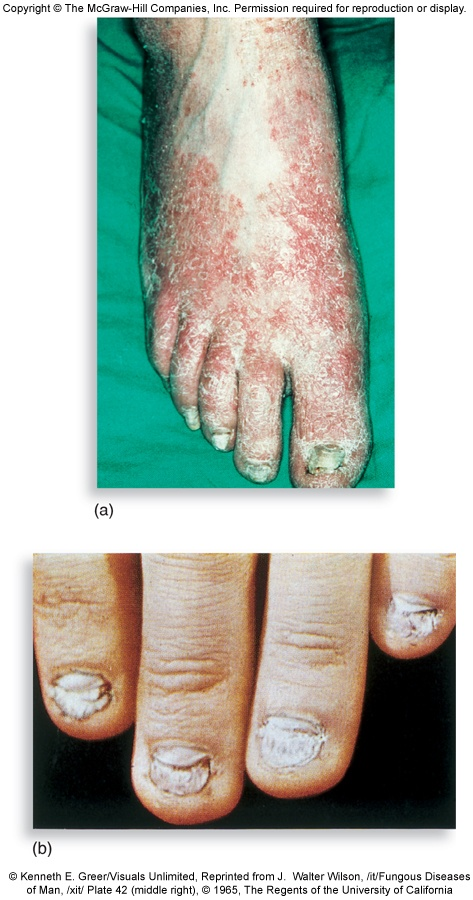
15.14 · Objective 1 — Superficial mycoses
| Mycosis | Cause | What it does |
|---|---|---|
| Tinea versicolor | A yeast, Malassezia furfur | Mild, chronic scaling and mottling of the skin; also implicated in folliculitis, psoriasis and seborrheic dermatitis |
| White piedra (piedra = stone) | Trichosporon species | Whitish or colored masses on pubic or axillary hair (also body, beard, mustache, eyebrows) |
| Black piedra | Piedraia species | Dark-brown to black, gritty nodules, mainly on scalp hairs |
Both piedras are considered non-contagious and may result from poor personal hygiene (oily hair products, tight hats or veils). Neither piedra is common in the United States.
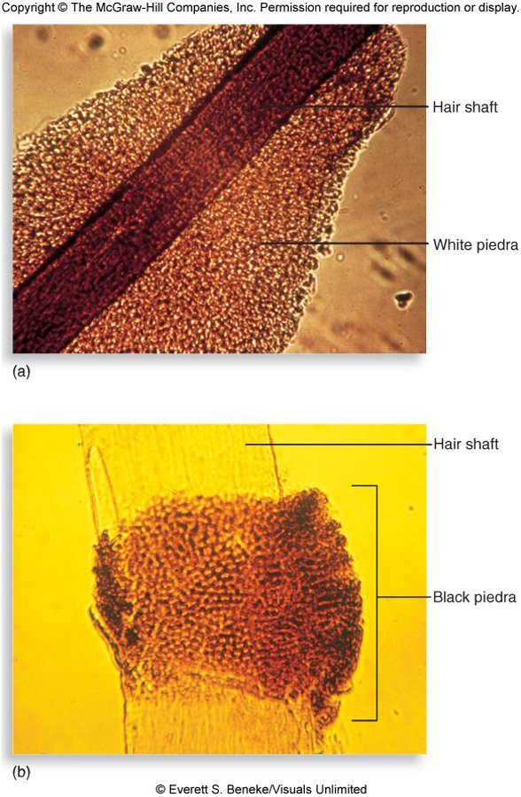
15.15 · Objective 1 — The opportunistic mycoses
These fungi were once considered “harmless” skin or air contaminants. All have predisposing factors, and the host’s defenses are compromised: Candida species, the dominant opportunistic pathogen; Aspergillus fumigatus, which accounts for most lung infections (the slide’s words; read it as most of the Aspergillus lung infections); Cryptococcus neoformans; Fusarium species; and Rhizopus species.
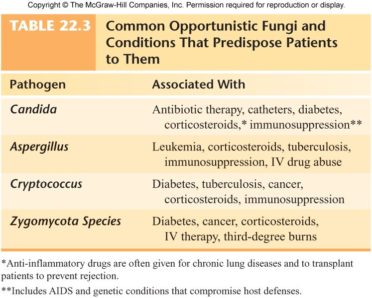
15.16 · Objective 1 — Candida and candidiasis
- Candida albicans is the familiar one, but Candida auris is emerging as a serious cause of invasive candidiasis, producing hospital outbreaks that are difficult to eradicate: antifungal drug resistance, thermoresistant, and partially resistant to common disinfectants. C. auris was first identified in Japan in 2009, as the cause of an ear infection, hence the name; cases have increased in recent years.
- C. albicans is a widespread yeast, usually endogenous and not always considered contagious; it can be spread through surgery, childbirth, breast-feeding and sexual contact.
- Infections range from short-lived, superficial skin irritations to overwhelming, fatal systemic disease in seriously compromised hosts.
- Colony: off-white, pasty, with a yeasty (“baking bread”) odor.
- Normal flora of the oral cavity, genitalia, large intestine or skin of 20% of humans; accounts for 70% of nosocomial fungal infections.
| Form | What the slides say |
|---|---|
| Thrush | A thick, white, adherent growth on the mucous membranes of the mouth and throat (chronic thrush in an adult man with diabetes, slide 54) |
| Vulvovaginal yeast infection | A painful inflammatory condition of the female genital region with ulceration and discharge; may be transmitted to unprotected sexual partners, especially uncircumcised males |
| Cutaneous candidiasis | In chronically moist areas of skin and in burn patients; intertriginous lesions (armpits, groin, under the breasts) are common in obese patients |
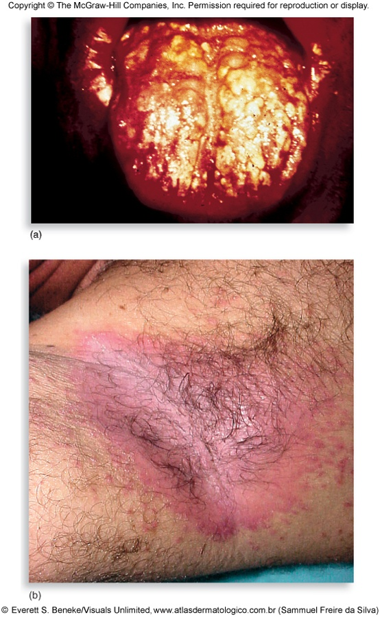
Diagnosis and treatment. A presumptive diagnosis is made if budding yeast cells and pseudohyphae are found; growth on selective, differential media differentiates the Candida species; the germ tube test is on the identification flowchart (15.5). Topical antifungals are used for superficial infections; amphotericin B and azoles for systemic infections.
15.17 · Objective 1 — Cryptococcus neoformans and cryptococcosis
- The number one critical fungal pathogen on the World Health Organization’s list.
- A widespread encapsulated yeast that inhabits soil around pigeon roosts in urban areas, and soil containing decaying wood.
- Healthy humans are strongly resistant; frank infection occurs in immunocompromised patients (human immunodeficiency virus infection and acquired immunodeficiency syndrome, cancer, immunosuppression, autoimmune disease, diabetes, cirrhosis). Treatment protocols are well established for patients with human immunodeficiency virus infection, though the drugs may be unavailable in many countries.
- Lungs: cough, fever and lung nodules. Dissemination to the meninges and the brain can cause severe neurological disturbance and death.
- Diagnosis: a negative stain shows the encapsulated budding yeast; biochemical and serological testing are the best diagnostic tools.
- Treatment: systemic infection generally requires amphotericin B and fluconazole or another azole-class drug.
15.18 · Objective 1 — Pneumocystis jirovecii and Pneumocystis pneumonia
- Formerly Pneumocystis carinii. A small, unicellular fungus that causes pneumonia; the most prominent opportunistic infection in patients with human immunodeficiency virus infection and acquired immunodeficiency syndrome.
- Immunological evidence such as antibody titer suggests that contact with it is very widespread and most of us remain asymptomatic.
- The pneumonia forms secretions in the lungs that block breathing and can be rapidly fatal if not controlled (cough, fever, shallow respiration and cyanosis). Kidney transplant patients are also at high risk.
- Treatment: pentamidine (an anti-protozoan) and the antibacterial co-trimoxazole (trimethoprim-sulfamethoxazole); these are NOT the traditional antifungal drugs.
- Its taxonomy is still debated, fungus or protozoan; most scientists lean toward a fungal classification because of genetic analysis.
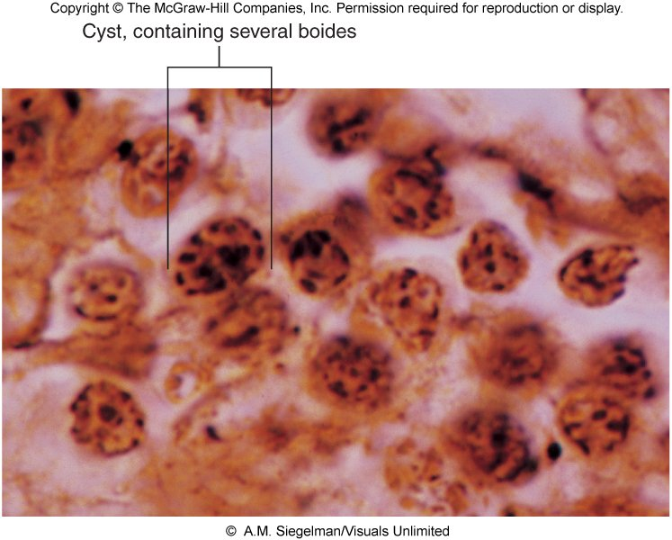
15.19 · Objective 1 — Aspergillus and aspergillosis
- A very common airborne soil fungus; its resistance to azole fungicides can be attributed to agricultural practices (crop spraying to prevent loss to fungi).
- About 600 species, 8 involved in human disease; A. fumigatus is the most common and is number three on the World Health Organization’s critical list.
- A serious opportunistic threat in human immunodeficiency virus infection and acquired immunodeficiency syndrome, leukemia, and transplant patients.
- Infection usually occurs in the lungs: spores germinate and form fungal balls; it can also colonize the sinuses, ear canals, eyelids and conjunctiva.
- Invasive aspergillosis can produce necrotic pneumonia and infection of the brain, heart and other organs; transplant recipients (organ and bone marrow) and cystic fibrosis patients are at increased risk.
- Treatment on the slide: amphotericin B and nystatin (see 15.23).
- In a sputum specimen it shows branched septate hyphae (15.5).
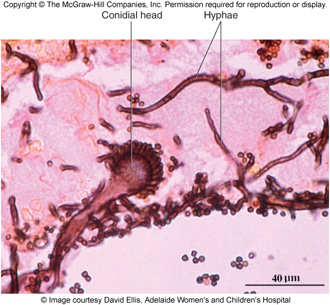
15.20 · Objective 1 — Mucormycosis and other opportunists
Zygomycosis (mucormycosis)
- Members of the Division Zygomycota are extremely abundant saprobic fungi found in soil, water, organic debris and spoiled food.
- Mucormycosis is called “black mould” and has arisen as a big concern in India over the last few years; injudicious use of respiratory steroids and uncontrolled diabetes may have contributed. Rhino-orbital-oral-cerebral symptoms have been documented.
- The fungi most often involved are Rhizopus and Mucor species.
- Usually harmless air contaminants that may invade the membranes of the nose, eyes, heart and brain of people with diabetes, leukemia or malnutrition, with severe consequences. There is also a pediatric gastrointestinal complication in children who lack sufficient protein (kwashiorkor).
- Treatment: removal of affected tissue and amphotericin B.
Miscellaneous fungal opportunists
- Any fungus can be implicated when the host’s immune defenses are severely compromised.
- Fusarium: another mainly tropical soil mold; occasionally infects the eyes (for example from contaminated contact lenses), toenails, feet and burned skin, and can result in severe disability and death.
- Eumycetomas, deep tissue infections, are especially prevalent in poor countries; risk factors: male, 11–30 years old, farmer, not wearing shoes. Long-term antifungal drug therapy and amputation may be required for full resolution.
15.21 · Objective 1 — Fungal allergies and mycotoxins
- Fungal spores are common sources of atopic allergies or hypersensitivities: seasonal allergies and asthma; farmer’s lung, teapicker’s lung, bark stripper’s disease.
- Fungal toxins cause mycotoxicoses, usually by ingesting or inhaling fungal toxins.
| Toxin or mold | What the slide says |
|---|---|
| Aflatoxin | Hepatotoxic and carcinogenic; grains, corn, peanuts; lethal to poultry and livestock (especially turkeys, ducklings, pigs and calves); in humans it may be a co-factor in liver cancer |
| Ergot | On rye or other grains contaminated by Claviceps fungi; mind-altering lysergic acid (the slide writes LSD; lysergic acid diethylamide is a semi-synthetic derivative of it); cross-reference Salem, Massachusetts |
| Stachybotrys chartarum | Sick building syndrome (damp building related illness, the “black mold”; very different from mucormycosis); can cause severe hematologic and neurological damage. Not all molds in buildings are toxic, and not all illnesses in buildings are due to fungi; fear of mold has spawned a whole industry of environmental mold control |
15.22 · Objective 2 — Modes of transmission
| How people acquire it | Fungi |
|---|---|
| Inhaling spores from disturbed soil or animal waste | The true pathogens: Histoplasma (soil with bird and bat guano, conidia whipped up by wind), Coccidioides (arthrospores in dust from digging, construction, dust storms), Blastomyces (conidia from forest soil, decaying wood, manure), Paracoccidioides (lung infection by inhalation) |
| Inhaling spores or yeasts of opportunists | Cryptococcus (soil around urban pigeon roosts), Aspergillus (airborne soil fungus; spores germinate in the lungs), the Zygomycota (air contaminants) |
| Inoculation through broken or punctured skin | Sporothrix (thorn, wood, bare roots); Paracoccidioides (skin infection by inoculation); true-pathogen spores into broken skin; nail extensions as a portal for tinea unguium |
| Person to person or by fomites | The dermatophytes (close contact, shared equipment, clothing, bedding, public surfaces; tinea barbae mainly from animals) and Candida (surgery, childbirth, breast-feeding, sexual contact) |
| Endogenous (already on the body) | Candida albicans, usually endogenous normal flora |
| Not communicable | Most fungal pathogens; Histoplasma is explicitly not transmitted person to person; the piedras are non-contagious |
| Ingesting or inhaling toxins | Mycotoxicoses: aflatoxin (grains, corn, peanuts), ergot (rye) |
15.23 Where the slides disagree, and where current practice differs
- Immunity after a true fungal pathogen. Slide 15 says long-term immunity “can only develop against a few true fungal pathogens”; slide 24 says “all of the diseases caused by the true fungal pathogens can result in immunity in a competent host”. No question asks which, or how many; the contrast with the opportunists (reinfection highly likely) is the same on both slides.
- Amphotericin B routes (slide 20). The slide calls it versatile, given topically, orally, by intramuscular injection or intravenously. In current practice it is given intravenously for systemic infection; it is not given by intramuscular injection and is poorly absorbed by mouth. Not asked.
- Why amphotericin B is toxic (slide 20). The slide gives the reason as fungi and humans both being eukaryotes, so the drug is not selective enough. Pharmacology references add the mechanism: it binds ergosterol in fungal membranes but also binds some cholesterol in human membranes. One quiz question asks this, keyed as the slide says.
- Aspergillosis treatment (slide 60). The slide lists amphotericin B and nystatin. Nystatin is a topical and oral (non-absorbed) agent and current practice does not use it for invasive aspergillosis (azoles such as voriconazole are used). Not asked.
- Temperatures. Slide 5 gives mold at 30 °C and yeast at 37 °C; the slide 6 figure gives the ranges below 30 °C and 35–40 °C, and slide 27 grows the mold below 35 °C. They agree on direction; the quizzes use slide 5’s two numbers.
- “Black mold.” Slide 63 calls mucormycosis “black mould”; slide 65 calls Stachybotrys the “black mold” and says the two are very different. Know them apart by what they do: mucormycosis invades tissue (nose, eyes, brain) in diabetes and leukemia; Stachybotrys is the sick building mold.
- Spellings. The deck’s “Blastomyces dermatiditis” (slide 34) is Blastomyces dermatitidis, as slide 33 spells it; “mould” is written mold here.
Source: Fungi of Medical Importance (PAJ5200.Fungi of Medical importance.pptx), Slides 1–65, and the PAJ 5200 syllabus instructional objectives.
16 · Significant Microorganisms in Food Safety
Dr. Fair · Lecture 16 · 30 October 2026
Instructional Objectives
- Identify sources of microbial contamination in global food supply.
- Correlate associations between contaminated foods with the increasing numbers of diagnosed food-borne illnesses and mortality worldwide.
- Analyze associations between public concern and antibiotic resistant strains of microbes in the food supply.
- Correlate associations between improved laboratory analytical methods with respect to near-daily announcements of food recalls and food-related illness.
Not read yet. This lecture was recorded on 30 October and the recording is being transcribed (ours, plus Notability’s own transcript as a second opinion). Until it has been read, this section is built from the slides alone, and the quizzes are weighted by slide count. When the recording has been read, this box will carry what Dr. Fair stressed, what she said to skip, whether she covered objective 3 (antibiotic resistance, which no slide teaches), and any correction of a slide (16.17 lists the ones worth listening for).
16.1 · Objective 1 — Microbes in food: production and spoilage
| Effect of microbes on food | What it means |
|---|---|
| Beneficial | Food fermented or otherwise chemically changed by added microbes or microbial products, to alter or improve its flavor, taste or texture |
| Detrimental | Food poisoning, food intoxication, food-borne illness and food spoilage: food unfit to eat because of undesirable flavors, appearance or smell |
| Neutral | Microbes present that neither cause disease nor change the food: “they’re just there and we consume them with the food” |
Bread making
Microbes have three main functions: (1) leavening flour-based dough (mainly carbon dioxide and other gases); (2) imparting flavor and aroma (organic acids and alcohols); (3) conditioning the dough to make it pliable and workable (microbial enzymes act on gluten to give elasticity). Microbes involved: Saccharomyces cerevisiae (baker’s yeast), certain Clostridium species, and certain Lactobacillus species (Lactobacillus sanfrancisco in sourdough).
Beer, wine and other fermented products
- Glucose + yeast → 2 ethanol + 2 carbon dioxide (C6H12O6 → 2C2H5OH + 2CO2). Evidence of beer brewing since 6000 BCE in Sumeria, Egypt and Babylon. Steps: malting of the starch source, mashing, wort plus hops, lagering, filtration.
- Wine usually starts with grapes, but other fruit and plant material can be used (apples, oranges, pineapples, peaches, plums).
- Sometimes the source of yeast for an alcoholic beverage is human saliva: chewing (mastication) of the plant material precedes the brewing.
- Pickling: salt brine preserves vegetable material; lactic acid may also be present, with vinegar and spices. Cucumbers, cabbage, olives, okra, onions, ginger root and many more can be pickled.
- Soybeans and their extracts are fermented into tofu and soy sauce (shoyu); also fermented fish sauce, mole (chocolate), tea and coffee.
Milk and dairy
- Milk begins sterile: water, minerals, protein, butterfat, lactose and other sugars. Microbes are introduced as it exits the female mammal’s body and by milking utensils; it is highly susceptible to microbial growth because of its nutrient density.
- Fermentation of milk can be natural or induced (cheese or yogurt making). Cheese making is about 5000 years old (cow, goat or sheep milk; some cultures horse or water buffalo). The first fermented dairy products were probably due to accidental contamination with human skin, nose or oral bacteria and fungi. Cheese making involves yeast, bacteria and molds (multicellular fungi).
- Yogurt is a fermented milk made with bacteria such as Lactobacillus and Streptococcus; other fermented milks are kefir, koumiss and buttermilk.
Microbes as food, and fungi in food
- Macroscopic fungi and algae are obvious foods: mushrooms, truffles, seaweed. Microbial additives for animal feed are already used; human versions are slower to be accepted. “Single cell protein” and bacterial or fungal products are being researched in the United Kingdom and elsewhere. In the United States the cyanobacterium Spirulina is added to foods such as smoothies and vitamin supplement gummies.
- Fungi do not commonly cause disease but are associated with both food production and food spoilage: importance in food (mushrooms), in medicine (they produce penicillin), and in industry (yeasts are fungi used to ferment many products). Fungal spoilage: bread, cereals and acidic juices.
16.2 · Objective 1 — Where foodborne microbes come from
| Source | Organisms and foods on the slides |
|---|---|
| Feces (human and animal) | Escherichia coli, the indicator organism of feces: fecally contaminated meats or vegetables. Norovirus and hepatitis A and E: feces (and vomitus), shellfish from feces-contaminated water |
| Animals, especially poultry | Salmonella: many animals, mainly poultry and aquatic reptiles. Campylobacter: raw poultry. Listeria: birds and mammals. Parasitic worms: venison, pork and other meat contaminated while the animal is still alive; domestic pet feces (tapeworm, roundworm) |
| Soil and plants | Listeria persists in soil. Clostridium spores: soils, plants, honey |
| Water | Vibrio: salt-tolerant, in ocean and estuarine waters. Protozoa: drinking water and uncooked fruit and vegetables |
| People | Norovirus person to person; the carrier cook (16.6); milk picks up microbes as it leaves the animal and from utensils |
16.3 · Objective 2 — The size of the problem, and who watches it
- An estimated 250 different foodborne pathogens, with bacteria the most common.
- The slide gives 75 million cases a year “worldwide” (probably under-reported) and at least 5000 deaths: a serious problem for global health (see 16.17).
- The worry is not only bacteria from plant and animal sources but also viruses, parasites and toxins produced by microorganisms.
- Surveillance and outbreak investigation: local and state health departments, the Centers for Disease Control and Prevention, the Food and Drug Administration, the United States Department of Agriculture. Law enforcement and policy: the Food and Drug Administration and the United States Department of Agriculture.
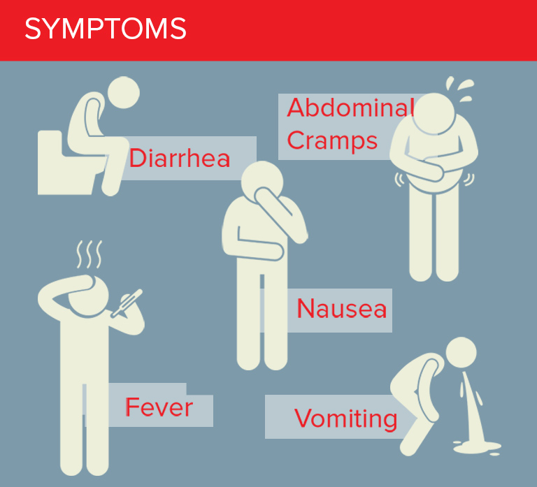
The better-known bacteria of the lecture (slide 13): E. coli, Salmonella species, Campylobacter jejuni, Listeria monocytogenes, Clostridium species, Bacillus cereus, and Vibrio species such as vulnificus or parahaemolyticus. Organisms other than bacteria (slide 30): fungi, protozoa, parasitic worms (in pork, venison, wild-caught fish) and viruses.
16.4 · Objective 2 — Food intoxication versus food infection
| Kind of illness | What is eaten | What happens | Examples (slide 12) |
|---|---|---|---|
| Food intoxication | A preformed toxin made by the bacteria in the food (cells and toxin) | The toxin is ingested and reaches its target organs (the diagram shows the brain and muscles) | Staphylococcal toxin, Clostridium botulinum toxin |
| Food infection | Live bacterial cells | Improper cooking lets the bacteria multiply in the food; after ingestion they cause an intestinal infection | Salmonella, Listeria |
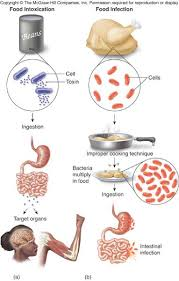
16.5 · Objective 2 — Escherichia coli
- EMB (eosin methylene blue) plates are often used to confirm E. coli in samples (food, water).
- An “indicator organism” associated with human and animal feces.
- Found everywhere, including inside humans, but not always pathogenic; it has many good traits too.
- As an infectious agent it causes nausea, vomiting and diarrhea. The bad strains can carry numerous toxins (for example the enterotoxigenic or enterohemorrhagic strains).
- Sporadic outbreaks originate from fecally contaminated meats or vegetables (the Jack in the Box hamburgers, bagged spinach). One of the worst culprits is the O157:H7 serotype.
- The outbreak and recall list (slide 16): hamburgers (1993), California bagged spinach (2006), refrigerated cookie dough (2009), romaine lettuce (2010, 2018 from Arizona, 2020–2021 from California), 7% of fresh spinach in grocery stores carrying E. coli (a 2013 report), beef products (2019), ground beef from packing companies (2023–2025), and raw milk cheese in the western United States (September–October 2026).
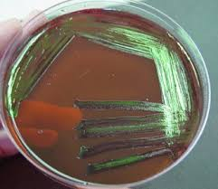
16.6 · Objective 2 — Salmonella
- The main species are Salmonella typhi, S. enterica, S. enteritidis and S. typhimurium; others are named for where they were first found (S. miami, S. heidelberg, S. sandiego).
- Associated with many animals, mainly poultry and aquatic reptiles.
- Salmonellosis can appear as gastroenteritis, enteric fever, septicemia (blood infection), fever, shock and kidney dysfunction. Incubation can be as short as hours or as long as weeks.
- Young children and the elderly are at greatest risk.
- Typhoid fever (S. typhi) is the most severe enteric fever: the intestinal wall is invaded and the bacteria can spread to the blood and lymph nodes.
Sources (slide 18): poultry products (chicken, turkey, duck), eggs, pet food, live poultry (such as backyard hens), peanut butter and sushi-grade seafood. Recalls have included peanuts and peanut butter (2009), hydrolyzed vegetable protein (2010), farm eggs (2010), ground turkey (2011), pre-cut watermelon (2018), turkey and pork products (2019), onions from Mexico (2021), pre-cut cantaloupe (2023), cucumbers from Florida and Mexico (2025) and jalapeno peppers (August 2026): produce, not just animal foods. Slide 19 pictures peanut butter jars, eggs, a pet turtle and a watermelon recall.
16.7 · Objective 2 — Campylobacter jejuni
- A leading cause of bacterial diarrheal disease each year in the United States, especially in children.
- Fever, headache, dizziness and bloody diarrhea, usually rapid in onset.
- The infectious dose is less than 500 bacterial cells, so even one drop of raw poultry fluid can cause illness.
- Very much under-reported. Be careful with Thanksgiving poultry and leftovers.
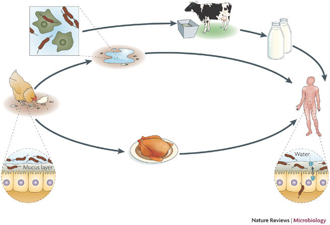
16.8 · Objective 2 — Listeria monocytogenes
- Found in birds and mammals, and can persist in soil.
- Large-scale food recalls: the big ice cream recall of 2016 (Blue Bell, slide 22), cantaloupes, frozen vegetables, poultry (2019).
- Greatest risk of listeriosis: pregnant women, unborn children, premature babies, elderly people and the immunocompromised.
- The slide calls it “the #1 cause of food-related deaths in the US” (see 16.17).
- Most vulnerable foods: soft cheeses, raw fruit and vegetables, raw or undercooked meats, deli meats, seafood, smoked seafood, hot dogs, preserved meats.
- Probably the biggest concern: it grows well from 1 to 40 °C, easily at refrigerator, room or freezer temperatures (the slide’s words; freezer temperatures sit below its own 1 °C floor, so see 16.17).
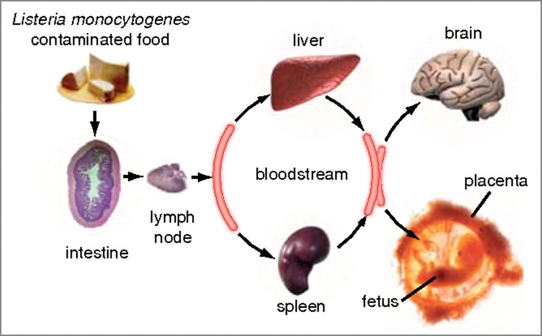
16.9 · Objective 2 — Clostridium and botulism
- Gram-positive rods, strict anaerobes, form spores.
- Notable species: C. botulinum and C. perfringens; C. tetani (not food-related) and C. difficile (also not food-related).
- Spores are found in soils, associated with plants, and even in honey (slide 26 shows a raw honey label).
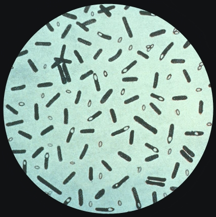
| Clostridium botulinum | Slide 27 |
|---|---|
| Toxin | When spores germinate they can start producing toxin: botulinum toxin (“botox”) |
| Forms | Foodborne and wound-borne botulism are known to occur |
| Effect | Ingesting the toxin leads to paralysis of the muscles in the relaxed position, then respiratory failure and death |
| Dose | Even if only a few bacteria are present, they can produce plenty of toxin |
16.10 · Objective 2 — Bacillus cereus
- A very common food poisoning agent, especially in summertime.
- Gastroenteritis from B. cereus is either diarrheal or emetic.
- Intoxication has a rapid onset (6 hours or less) with self-resolving vomiting and abdominal cramps.
- Keep hot foods hot and cold foods cold.
| Form | Toxin, as the slide gives it | Food |
|---|---|---|
| Diarrheal | Heat-stable toxin (see 16.17) | Meat |
| Emetic | Heat-labile toxin (see 16.17) | Rice |
16.11 · Objective 2 — Vibrio
- Several species: Vibrio cholerae, V. vulnificus and V. parahaemolyticus.
- Salt-tolerant bacteria of ocean and estuarine waters.
- Two major routes: water (ingested, or wound infections) or foodborne (shellfish, crabs, raw seafood, oysters).
- The “R-month” rule (no oysters, clams or mussels in May, June, July and August): “maybe, maybe not”; aquaculture practices have advanced so much that there are fewer worries.
16.12 · Objective 2 — Fungi, protozoa and parasitic worms
- Fungi: rarely disease, mostly production and spoilage (16.1).
- Protozoa: Cryptosporidium, Cyclospora, Giardia, Entamoeba. All can cause mild, usually self-limiting diarrhea associated with uncooked fruits and vegetables or drinking water. Ready-to-eat salad bags are a common culprit.
- Parasitic worms: tapeworm, roundworm, trichinosis. Best killed by thorough cooking. Venison, pork and other meats can be contaminated while the animal is still alive: the muscle or organ meats may be suspect. Domestic pet feces can carry tapeworm and roundworm.
16.13 · Objective 2 — Foodborne viruses
| Virus | How common | Spread | Course |
|---|---|---|---|
| Norovirus (Norwalk-like viruses, family Caliciviridae) | A common foodborne agent, upwards of 23 million cases a year | Person to person, by feces and vomitus (daycares, nursing homes, cruise ships); also contaminated shellfish (feces-contaminated water) | Infectious dose only a few viral particles; rapid onset and short duration: nausea, vomiting, diarrhea, low-grade fever |
| Hepatitis A and E | Hepatitis viruses A–E exist; A and E are the ones typically spread by the fecal-oral route | Fecal-oral; not by kissing, sneezing, saliva or blood | A person is most contagious about two weeks BEFORE symptoms appear |
Prevention, for both: Good handwashing and diaper hygiene; cook food thoroughly; clean drinking water. For hepatitis, a vaccine in case of suspected exposure (the slide does not say which; see 16.17).
16.14 · Objective 4 — Laboratory methods, tracking and recalls
- A pulsed-field gel electrophoresis pattern for each microbial isolate is added to a database run through the Centers for Disease Control and Prevention: “PulseNet”.
- It can help determine the causes of outbreaks or even detect problems at food processing plants.
- This surveillance reduces the detection time and the number of cases of illness.
- In the laboratory, eosin methylene blue plates confirm E. coli in food and water samples (16.5).
- Online resources: Foodsafetynews.com, Foodsafetymagazine.com, the Centers for Disease Control and Prevention (PulseNet), the Food and Drug Administration (food and dietary supplement recalls, including pet food) and the United States Department of Agriculture (food recall information).
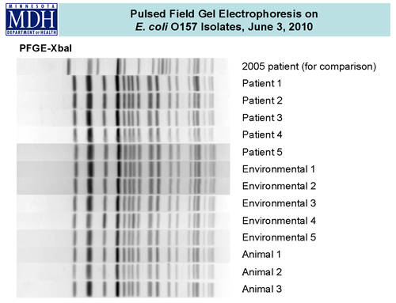
16.15 · Objective 3 — Antibiotic-resistant strains in the food supply
No slide teaches this objective. The deck’s objective slide lists it, but none of its 36 slides mentions antibiotic resistance, antibiotic use in food animals or resistant strains in food. Nothing is added here from outside the slides, and no quiz question asks it. If the recording covers it, the audio pass will say what was said; otherwise ask Dr. Fair whether it is examinable.
16.16 · What you can do: prevention
- Good handwashing with hot, soapy water.
- Wash fruits and vegetables.
- When in doubt, toss it out.
- Clean kitchen surfaces and utensils with mild bleach cleaning solutions.
- When cooking meat, use a meat thermometer (165 °F) rather than guessing.
- Cutting board and knife materials; avoid cross-contamination of cutting boards and utensils.
- Proper use of disposable gloves in food service; hair coverings and food service attire; “ServSafe” training and certification.
- From the Bacillus cereus slide: keep hot foods hot and cold foods cold. From the viruses slide: handwashing and diaper hygiene, thorough cooking, clean drinking water.
16.17 Where the slides and current references differ
The quizzes key what the slides say (we are tested from the slides). These are the points where current references say something else; the recording may settle them.
- Bacillus cereus toxins (slide 28). The slide gives the diarrheal form a heat-stable toxin and the emetic form a heat-labile one. Standard references say the reverse: the emetic toxin (with rice) is the heat-stable one, and the diarrheal enterotoxin (with meat) is heat-labile. One quiz question asks this pairing, keyed as the slide says.
- The case and death figures (slide 9). “75 million cases per year worldwide” and “at least 5000 deaths” match older United States estimates rather than worldwide ones; World Health Organization estimates for the world are far larger. Not asked.
- Listeria as the “#1 cause of food-related deaths in the US” (slide 23). National estimates rank nontyphoidal Salmonella above Listeria for total deaths; Listeria has one of the highest death rates per case. Keyed as the slide says.
- 165 °F (slide 36). Food-safety agencies give 165 °F for poultry, leftovers and casseroles, and lower internal temperatures for other meats (160 °F for ground meat, 145 °F for whole cuts with a rest). Keyed as the slide says.
- Listeria at freezer temperatures (slide 23). The slide gives a growth range of 1 to 40 °C and also says it grows easily at freezer temperatures, which are below that range. References say it survives freezing and grows at refrigerator temperatures. The quizzes ask only the 1–40 °C range and refrigerator growth.
- The hepatitis vaccine (slide 33). The slide says there is a vaccine in case of suspected exposure without naming the virus. That fits hepatitis A; there is no licensed hepatitis E vaccine in the United States.
- PulseNet’s method (slide 34). The slide describes PulseNet with pulsed-field gel electrophoresis patterns, which is how it worked for decades; PulseNet has since moved to whole genome sequencing. The quizzes ask what the slide says.
- Names. The deck’s “S. enteriditis” is S. enteritidis; “parahemolyticus” is parahaemolyticus.
Source: Significant Microorganisms in Food Safety (PAJ5200.FoodSafety-micro.pptx), Slides 1–36, and the PAJ 5200 syllabus instructional objectives.